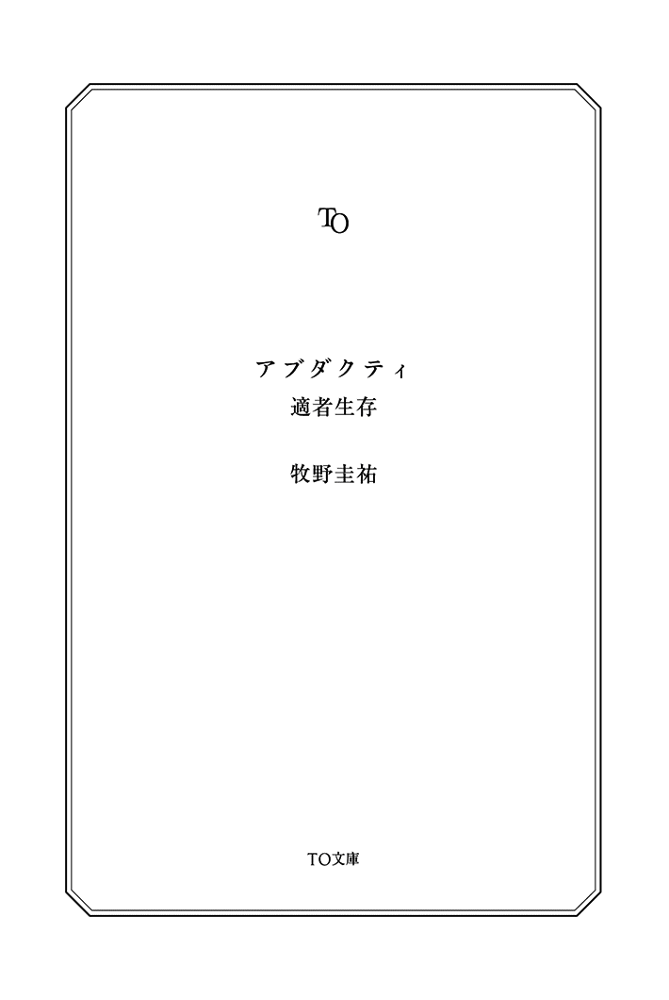

| アブダクティ (TO文庫) | |
| 牧野圭祐 | |
| (2013) | |
無職で借金だらけの中年ダメ男、千葉。彼が目覚めた場所は、移動するコンテナの中だった。しかも手足を縛られ身動きができない状態にされていた。誘拐されたと思った千葉は、携帯で助けを求めようとするも、圏外に。誰が、いつ、なぜ、何の目的でオレを！？次々と湧き上がる疑問。しかし、コンテナの中には自分と石塊が一つ。 脱出不能の空間で起こる予測不能の"密室・パニック・サスペンス"！

アブダクティ 適者生存
「ダーウィンによると、最も強い者が生き残るのではなく、最も賢い者が生き延びるでもない。唯一生き残るのは、変化に適応できる者である」
──レオン・Ｃ・メギンソン
ワタシは、いつものように、いつもの場所へ作業に向かっていました。
ところがその日は肌で感じる空気がいつもと違う気がしたのです。
それは涼しいとか暑いとかの気候で説明がつくものではなくて「はて、この感覚はなんだろう、風邪でも引いたのかな」などと考えていると突然頬がピリピリし思わず足を止めたのですが、気が付いたときには周囲は真っ白な光に包まれていました。
【32 Ｄ】
千葉 厚 志 は自称「世界で一番不幸な人間」です。これはあくまでも自称で、とはいえ人類平均値から算出すれば不幸なほうかもしれませんが、少なくとも世界一などということはありません。世界にはもっと不幸な人は数え切れないほどいます。
例えば昨日エチオピアで生まれた女の子ンジョホッヨ・ンバンバヤちゃんは生まれた２秒後にマラリアにかかり２時間後にエボラ出血熱で死にました。また、太平洋を横断する豪華客船の上で生まれたレオナルド・クリューガー・ジュニアは、１時間後に事故で海に落ち、３週間後に捜索打ち切りとなり葬式が執り行われましたが、実は生きていてミクロネシアの無人島に漂着し、89 歳で息を引き取るまでカニクイザルを両親だと思い、自分を少し身体の大きなサルだと思っていました。レオナルドは甲殻類アレルギーで、カニを食べるたびに蕁 麻 疹 が出ていました。
このふたりに比べれば幸せ者以外のなんでもない千葉ですが、この男、ちょっとしたことで『世界一不幸』と思ってしまうような、腐った性根の持ち主でした。
しかし、たしかに、現在の状況は不幸だといえるのかもしれません。
何故なら千葉は知らぬ間に拉致されトラックのコンテナに閉じ込められ両手両足をヒモで縛られ床に投げ出され顔にはビニール袋を被せられ窒息死させられそうになっているからです。
息を吸うたびにビニール袋が口に張り付いてクシャクシャと不快な音を立て二重あごは唾液にまみれ、ビア樽のような中年太りの身体に纏 ったチェックのネルシャツのボタンはパツンと千切れ爪先が破れた靴をパコパコ鳴らす奇怪な芋虫状の生き物がのたうちまわる姿は滑稽なことこの上ないですが、千葉本人はいたって真剣にもがき苦しんでいました。
うねうね動く芋虫を弄ぶかのようにトラックは猛スピードで走りタイヤをギギギィと軋ませながらカーブを曲がり、芋虫はカーブの遠心力に負けて硬い金属の床をごろごろごろりと転がったすえ壁に顔面を強打。鼻血が吹き出しビニールの中が血の池地獄。息も絶え絶えに意識を失いかけたそのとき急ブレーキがかかり勢いで千葉の口と壁が衝突。それは運命の接吻でした。前歯を壁に打ち付けた衝撃でビニールに３センチほどの切れ目が入ったのです。千葉はその切れ目に舌を突っ込み、切れ目を広げようと舌だけ別の軟体動物になったかのように動かし鼻血と唾液でべちょべちょになりながらもなんとか千葉はビニールの繭 から脱皮しました。
「はぁ、ぶはぁ。痛ぁ。はぁ、ぶぁぶぁぼぁ」
薄くなった頭髪は汗で額に海草のように張り付き、鮮血で顔全体が赤く染まり、ただでさえ醜い彼の顔はまるで人間を喰った直後の凶悪な河童のように恐ろしく、女子供が見たら失神するような醜悪なものになっていましたが、幸いコンテナ内には彼以外誰もいませんでした。
千葉は床に転がったまま、壁の上部に設置された非常灯の頼りない灯りを頼りにコンテナ内を観察しました。少しカビ臭くジメジメしたこの空間は、どうやら四方を壁に囲まれていて出口がないとわかりました。
「う......うぁ？ な......なんだよぉ、これ......」
拉致監禁誘拐人さらいなど物騒な言葉が脳内をぬめぬめと這いずり回り「そういえば拉致と誘拐の違いってなんだっけ」と現実逃避しかけましたが、
パパラパラァ！ パパラパパラパラパラパァ！
と外から聞こえた珍走団の間抜けなクラクションのせいで現実に引き戻されました。普段なら「うるせえなぁ事故って死ねゴミムシどもが！」と心の中だけで中指を立てるところですが、今はそれどころではなくそんなゴミムシにでもすがりたくて「すいません助けてください」と懇願してしまったくらいに頭がパァになっていました。とにかくこれは生命の危機だということをようやく理解すると血の気が引いていき、真っ赤だった顔が急激に真っ青になっていきました。
「だ......誰か！ 誰か、誰かいませんか！」
やかんが沸騰したときにピーピー鳴る音のような甲高い叫び声をあげましたが、分厚い壁で隔絶されたコンテナ内にむなしく反響するだけでした。
「誰か！ 誰か誰か！ たす、たすけて！ 助けてください！」
芋虫河童は壁に這い寄ろうとしますが、ヒモに自由を奪われていてなかなか進めません。
「くそぉ！」
なんて頭の血管が切れそうになるくらい両腕に力を込めますが、ヒモは食い込むばかりでした。
漫画にでてくる超人だったらこんなヒモくらいブチッと千切れるはずだ、と気合を入れて集中し、
「このぉ！」
なんてもがいても、体脂肪率40 ％という堕落の寄せ集めのようなブヨブヨの身体では細いヒモにすら歯が立ちません。
もう、ダメだ......死ぬ......殺される......死ぬのって痛いのかな、もう、おしまいだ。なんで、なんで、なんでこんな不幸なんだよ......。
千葉は早くも生きるのを諦めたようです。
ところが、人というのは一旦諦めると逆に冷静になれるものなのでしょうか。千葉は、まるで熱帯雨林に棲息する気味の悪い蛇のように、首だけ持ち上げてせわしなく辺りを見回し始めました。ヒモを切る道具を探そうと思ったのです。見た目が血皿河童芋虫でも、道具を使おうと考えるあたり、中身はまだまともな人間のようです。
床には色々なものが散乱していました。謎のイタリア人の名前がブランド名の安っぽいリュックの口がだらしなく開き、その中身がぶちまけられたようです。
競艇のマークシートに、記入用の鉛筆、交通誘導員の制服、支給された赤く細長い誘導棒、ポケットティッシュ、汚らしく丸まったハンカチ。家と自転車の鍵がついたキーホルダー。
「全部、私のだ......」
しかし、どれもこれもヒモを切るのには使えそうにありません。護身用のナイフを持ち歩いていればよかったと後悔しましたが、そもそも持ち歩いていたところで千葉には使いこなせなかったでしょう。
千葉は誘導棒を見て、ハッと息を飲みました。プラスチック製の誘導棒でヒモを切ろうとするほど気が変になっていたわけではありません。誘導棒が千葉の思考を誘導してくれたようで、今になってようやく拉致される前に何をしていたのかを思い出したようです。
「......たしか、バイトに行く途中だったはずだ......」
千葉は千葉という名字のくせに埼玉と東京の境にある田舎町に住んでいました。キャベツ畑と駐車場に囲まれた昭和の遺物のような築60 年のアパートにひとりで暮らしながら、交通誘導員のアルバイトで日銭を稼いでいました。
その日も夜間交通整理のバイトに向かうためカップラーメンをかき込み、錆び付いて油が切れた自転車をギィコギィコとこいでいました。19 時半に家を出て、20 時前には青梅街道近くの工事現場に到着する予定でした。
春風そよぐ心地良い夜なのに千葉の気持ちが鉛のように重かったのは「また若いバイトから馬鹿にされて嫌がらせされるんだろうな」という情けない事情があったからです。しかも今夜はそれに加えて「明日からゴールデンウィーク」という世間の浮かれた空気が追い打ちをかけ、背負ったリュックがどんどん重くなっていき、春の闇にずぶずぶと沈み込んでいく想いでした。
日雇い労働者に祝日なんて関係ないということ以上に心を蝕んだのは、幸せそうな家族や青春を謳歌している大学生たちをバカンスの地へ誘導せねばならないという苦行が待ち構えていたからです。
その一方で、千葉は深夜の長距離輸送をしているトラック野郎たちには親近感を抱いていました。車体に描かれた「天下御免の一番星」「咲かせてみせます愛の花」という言葉を見るたびに孤独を共有できる気がして励まされていました。
しかし、まさか千葉自身がトラックで運ばれることになるとは想像もしていなかったようです。
千葉はどういう状況で拉致されたのか思い出そうと、必死に記憶の糸をたぐっていました。
「......いつも通りガソリンスタンドの脇を曲がって、街灯のない暗い路地を通っていて......そのあとの......記憶がない......」
千葉は自分の身に何が起きたのか全く思い出せず、困惑の迷路に入り込んでいました。
「電話だよ」
可愛いらしい幼女の声をした機械音声がコンテナ内に響きました。
千葉は驚いて音声の鳴った方を見て、ぼんやり発光しているそれが自分の携帯電話だと気付きました。
「電話だよ」
「待って！」
千葉は胸に希望を抱いて身体をくねらせ慌てて携帯へと急ぎましたが、ディスプレイに表示された『スマイル金融』という文字が目に入った途端に背筋が凍りつきました。
まさか借金の返済を滞納したから拉致されたのか、と恐怖で動けなくなっていると、
「電話だよ」
と機械音声がまた催促してきました。
とにかく電話に出ようと思いましたが、手が縛られているので通話ボタンが押せません。
「電話だよ」
口を携帯に近付けて歯で押そうとしましたが、折れた歯が痛んでアガガっとなって上手く押せません。
「電話だよ」
「待って！ 待って待って！」
どうやって押そう、何か使えそうなものは、と床に散らばった物に目をやったところ、転がっている鉛筆を見つけ「あれだ！」と金銀財宝を発掘したかのように喜び、顔をゴルフクラブ、携帯をゴルフボールに見立てて鉛筆へ狙いを定め、鼻血を垂らしながらエイヤッと顔を振って携帯を鉛筆近くにナイスショットすると今度は自分が床を転がって鉛筆のところへ急ぎました。
「電話だよ」
鉛筆を口でくわえて顔を持ち上げ、ヘビが鎌首をもたげるような体勢で通話ボタンに狙いをすましましたが両手両足を縛られた状態で人生史上一度もとったことのないポーズを維持出来るほどの筋力は無く、顔がブルブル震え汗や鼻血がボタボタと携帯に滴り落ち背中が攣 りそうになり車酔いで平衡感覚が失われた中で、エイヤッエイヤッと通話ボタンを狙って鉛筆を突き降ろしますが、カツッ、カツッとボタンを擦るだけで上手く押せません。
「電話だよ」
「うぅうぅ」
カツッ、カツッ。
「電話だよ」
「うぅ」
カツッ、カツッ。
「電話だよ」
「うぅ......」
ついに千葉の身体は限界に達し、もうダメだと、鉛筆をくわえたまま携帯の上に頭を落としました。
ピッ。
偶然、鉛筆の先が通話ボタンに当たりました。悪運の強さがあるあたり、やはり世界一不幸とはいえないでしょう。
『おっ!? ぉおぃボケ！』
通話口の向こうから、幼女の音声とは正反対のドスの利いたしゃがれ声が飛んできて、千葉の弱り切った心を串刺しにしました。
千葉は腹をすえ、蚊の鳴くような声で応対しました。
「も、もしもし」
『出ぇんの遅せぇぇんだょボケ！』
「すいましぇん！ すいましぇん！ しゅいましぇん！」
『しぇんしぇんぅっしぇぇえんだ黙れボケ金返しゃれぇぇぇボケ！』
今の千葉を地獄の底に突き落とすには、言語障害のような口調で語尾にボケと付けるしか能がない借金取りの怒声で十分でした。
「すいましぇん、た、助けてください！」
『助ぁけてってぇ!? てめぇが金返しゃあぃぃんだょボケ！』
「すいません！ 来月まで待ってください！ 競艇も競馬もパチンコも二度としません！」
ギャンブルはやめるという誓約書を書かされていましたが、拉致されるときに競艇のマークシートを見られてしまった以上、言い訳はできないと千葉は思いました。
『てめぇまたギャンブルしゃあったんかぁ!? 借金いくらぁんのかわかってぇんかぁ!? ５００万だ！ ５００万！』
「あの、その......」
パパラパラァ！ パパラパパラパラパラパァ！
『ぁんだ今の音わぁ!? パチンコやってぇんじゃねぇだろうな』
「違います！ 今のはバイクの音です！」
『んだ返せねぇぇんなら、内臓売ってぇもらっからなぁボォケェ！』
「え？」
『ぇじゃぁねぇ内臓......な......あ......ざぁじゃ......がじゃぁ......』
突然借金取りの声に雑音が混じりはじめ、もともと聞き取りにくかった声がもはや雑音そのものになっていきました。
「あっ、あの、電波が悪いみたいで......」
返答はなく、通話は切れてしまいました。携帯のディスプレイには『圏外』と表示が出ており、どうやらトラックはトンネルに入ってしまったのだとわかりました。いつもなら催促の電話など切りたくて切りたくてしょうがないところですが、今日に限っては「なんで切れるんだよぉ......」と嘆き、底知れぬ恐怖で歯がガタガタと震えています。その反応も当然でしょう。これから人里離れた山奥の廃墟に連れて行かれて拷問をされて身も心もメタメタのグヂャグヂャになって麻酔もなしではらわたをズルリとえぐり取られＢ級ホラーのように血がぶしゅっと噴き出すかと思うと五臓六腑がじくじく痛み、生きた心地がしなかったからです。「私の命はたった５００万の価値しかないのか......」と死を覚悟した千葉の脳裏をこれまでの人生が壊れたメリーゴーランドのようにピロリピロリと巡りはじめました。
50 年前の４月15 日。岐阜県山間部にある寂れた温泉街の、秘湯すぎて秘密のまま客がこない民宿で千葉厚志は産声をあげました。幼い頃から引っ込み思案で勉強も運動も苦手で根暗で何一つ取り柄がありませんでした。
幼稚園小学校と毎日老舗旅館の御曹司にいじめられた千葉は放課後ひとりで町の片隅に行き、硫黄の匂いを嗅いで湯の花を採集して舐めるだけの生活を送っていました。両親は友達がいないのではないかと心配し、誕生日会を企画したところ出席者はゼロ。傷口に塩を塗りたくられた千葉の楽しみといえば、温泉まんじゅうの湯気の匂いを嗅ぐことかゴミ捨て場に毎週捨てられる少年漫画を読んで現実逃避することくらいになっていきました。
転機は中学１年のときに訪れました。『いじめられっ子がボクシングに出会って、チャンピオンを目指す』という熱い漫画を読み、生まれて初めて痛いことや嫌なこと以外で涙が流れました。
感動した千葉は、
「よし！ 今日から生まれ変わる！ ボクシングをはじめていじめっ子に打ち勝ち、世界チャンピオンになってやる！」
などとは、全く思いませんでした。何故なら顔を殴られた時のことを想像しただけで心がＫＯされたからです。50 メートル走が常にクラス最下位で、握力も背筋力も女子の平均にすら満たない千葉がボクサーを目指すなどあり得ないことでした。
そこで千葉が取った行動は、絵を描くことでした。
興味の対象が硫黄や温泉まんじゅうから漫画に移り、毎日チラシの裏に絵を描いて過ごしたお陰なのか元から才能があったのかはわかりませんが、中学生にしてはそこそこの画力が身につきました。
はじめて描いた漫画の内容は、超人的な力を手に入れた千葉厚志自身が老舗旅館の御曹司をぶち殺すという残忍で根暗極まりない、とても周りには見せられないものでした。それは架空の物語とはいえ、千葉はすごくすっきりしました。
こうして漫画を描く魅力にすっかりはまった千葉は、お年玉貯金をはたいて原稿用紙やペンなど一式揃え、勉強そっちのけで描き始め、勢いだけで描いた正義のヒーロー漫画を雑誌の新人賞に応募したところ、なんと高校２年生にして佳作を獲ってしまいました。世界一不幸だと思うネガティブな想像力が良い方向に花開いた瞬間でした。
その賞は「マイナー雑誌の増刊号」という誰も知らないような雑誌の新人賞で記念品の原稿用紙50 枚が送られてきただけでしたが、田舎の高校生が天狗になるには十分で進路調査用紙に『漫画家』と書いたところ担任に「は？」と言われ親に「は？」と言われ自称「特別な人間」だった千葉は「大人は誰も判ってくれねえ！」と心の中で叫び「出世払いだ！」と母親のタンス貯金から無断でありったけの金を奪い、マイナー雑誌の編集者ただひとりを頼りに電車に飛び乗りました。
「は？」と困惑する編集者の顔に千葉も困惑してしまった18 歳の春、編集者に「千葉さん......ほんとうに18 歳ですか？ ウソでしょ？ 私29 歳ですけど、私より年上に見えるんですけど」といわれた千葉は年齢詐称を疑われながらも連載という夢に向かって漫画を描く生活をはじめました。
国籍不明の怪しげな人々が昼夜問わず往来する台東区の保証人不要のボロアパートを借り、ときどき隣部屋から悲鳴が聞こてきたり警察が張り込んでいたりしても、主食がモヤシで元々モヤシのような身体がますますモヤシ化しても辛くはありませんでした。編集者の「とにかく売れる漫画を描きなさい」というアドバイスをちょっとおかしいと思うも参考にして、漫画家のアシスタントやコンビニのアルバイトをしながら日々夢に向かって邁進しました。
そして上京して半年ほどたったある日、大きな試練が彼を襲いました。
「はいかん？ 廃刊？ 廃刊!? 」
思わず３度言ってしまうようなショックでした。
雑誌は廃刊。出版社は倒産。担当編集者は音信不通。
「僕が連載デビューしてたら雑誌の救世主になれたかもしれないのに......」
若気の至りがこじれて勘違いの塊となっていた千葉は「今度は廃刊しないようなところにしよう」と大手出版社の有名漫画雑誌を回りはじめました。
ところが、世の中は千葉が考えているほど甘くはありません。
「どっかで見たことある」「面白くない」「絵が下手」
浴びせられる罵声の数々に千葉の自尊心は徐々に崩れていきました。
「ペンネームの千葉スパーってどういう意味？」
「スパーは英単語で温泉って意味で......」
「プふぅ！ スパーって......ぷふぅ！」
ウケたのは、三日三晩悩んで付けたペンネームだけでした。
持ち込み先がいよいよなくなり、大手は最後の一社になりました。
度重なる玉砕で心身ともに不調になっていた千葉は、行きの電車で腹を壊してトイレに駆け込み、その結果30 分遅刻していったところ編集者に１ページも読まれることなく「便所の紙になったほうが世のためだ」とその場でシュレッダーにかけられてしまいました。
原稿と一緒に千葉の自尊心もジョリジョリと粉々に裁断されてしまいました。
打たれ弱く根気のなかった千葉は持ち込みをやめ、途方に暮れましたが、母親のタンス貯金を使い果たして出世払いどころではない現状、実家に戻るわけにもいきませんでした。
行くあてもなくボロアパートに残り、何の生産性もない生活をしていました。そして23 歳の誕生日、寂しく自分祝いをしようと３００円のケーキをひとつ買って帰る途中、新入社員を交えて花見をするサラリーマンの集団とすれ違ったとき、突然「旅に出よう」という考えが浮かびました。もやもやとした悩みが募ってとうとう自分探しに片足を突っ込みましたが、旅に出る貯金がありませんでした。
さてどうしようと、桜舞い散る上野公園を浮浪者や鳩に交じってフラフラしていたところ、流しの詩人が人間を応援する色紙を売っているのを見かけて「これだ！」と閃きました。
千葉は似顔絵を描きながら日本一周することを思いつきました。英語がしゃべれないから日本一周というところが千葉の小物感を表していました。
そして千葉はバイト先に長期休暇の了承を得ると、勢い込んで一路北へと向かいました。その道中、工事現場で若者に罵られている中年を見て、ああいう風にはなりたくないよなと思いました。
ところが、似顔絵は全く売れず、埼玉の公園で野宿していたところヤンキーに絡まれ早くも挫折。旅立って３日後のことでした。
失意の中アパートに戻り、自分を見失ったままバイトをして食っちゃ寝、食っちゃ寝、恋人いない歴24 年、朝まで独り酒、恋人いない歴25 年、徹夜でゲーム、恋人いない歴26 年、時々漫画のアシスタント、若ハゲの兆候、27 年、コンビニの廃棄を食べまくる、28 年、贅肉がついてひと回り成長。不摂生が祟って見た目は40 代になり、10 年続けているバイト先では『おやっさん』と呼ばれるようになっていました。
「おやっさんって漫画家サンなんですかぁ!? 」
千葉に話しかけたのは新人バイトの16 歳女子高生クータンですが、女性との接し方がわからない千葉はクータンと呼べずに久保田さんと呼んでいました。
「久保田さん、そんなこと誰が言ったの？」
「てんちょーです！」
店長め、余計なこといいやがって、などと思いつつも、今まで一言も話したことがなかったクータンと会話のきっかけができたことが嬉しく、しかもクータンはキラキラした純粋な目で千葉を見て「絵が上手いひとって、ほんとリスペクトってかんじです！」とちょっと尊敬するような素振りをしたので、千葉はすっかり気分が良くなって話にノッてしまいました。
「あのね、漫画家っていっても、まだタマゴみたいなものだよ」
「そうなんですかっ!? 」
タマゴの中で雛はミイラになっていそうでしたが、そんなことは気にせずにさらに続けました。
「こう見えても、新人賞を受賞したことがあってね。もうちょっとで連載だったんだよ」
「へえ！ おやっさんの漫画読みたいですぅ！」
千葉はどれを読ませるか悩みましたが、若い女子ウケしそうな甘く切ない恋愛モノ『ロマンチックルネッサンス』を渡しました。
それからというもの千葉は感動して号泣した久保田さんとあーなったりこーなったりクータンクータンする未来予想図を描いていました。
数日後、『ロマンチックルネッサンス』は紙袋に入った状態でロッカーに置かれていました。付箋に「ありがとうございました」とだけ書かれていていました。
千葉が感想をクータンに訊いてみると、
「あ、読んだんですけど......」
「あ、はい」
クータンは返答に困っているようでした。
もしかしたら恥ずかしがっているんじゃないかと勘違いした千葉は、しつこく感想を求めました。
「『ロマルネ』どうでした？ 誰に感情移入できたかなと思って」
「あー......あぁ......えー......ぁ........................」
恋愛経験皆無の千葉が生み出しためくるめく悪夢のような恋愛絵巻は、いたいけな女子高生を言語障害状態にするには十分な破壊力でした。
それ以来クータンは目を合わせてくれなくなり、どうやらロッカーにおかれていたとき勝手に読んだらしき同僚も冷たくなりました。それでもバイトは辞めませんでした。廃棄される弁当をこっそり持ち帰って食費を浮かしていたことと、今更他の仕事を覚えるのが面倒臭かったからです。
『ロマルネ』が全否定されたことでどん底に落ちて酒浸りになっていたある日、「電話だよ」と携帯が鳴りました。どうせまたバイトのシフト変更だろうと携帯を手に取ると、実家からの着信でした。千葉はその表示を見て固まってしまいました。出世払いの催促だと思ったからです。上京した直後に「10 年後には倍にして返す」といった記憶がありました。倍どころか、カスも残っていません。なので、電話に出ないでいましたが、いつまでもしつこく「電話だよ」と呼び出しが続きました。さすがにおかしいと感じた千葉が電話に出ると、母親は震える声でこういいました。
「お父さんが車にひかれて......亡くなったの......」
硫黄が匂い立つ道を歩きながら、父親に漫画を読ませられなかった自分を情けなく思うとほろほろと涙がこぼれましたが、通夜で母親がびぃびぃと号泣しているのを見るとさらにいたたまれなくなり、親戚の冷たい視線に耐えられず、虫除けに追われた虫のように居場所をなくし、自分の部屋にすすすと逃げ込みました。
上京して以来久しぶりに入ったそこは、以前と何も変わらぬ姿でした。埃を被ったノートを開くと、中学時代の自分が描いた黒歴史ともいえる漫画が目に飛び込んできました。あまりの恥ずかしさに顔から火が噴きだして山の中を奇声をあげながら走り回りたい気分でしたが、身悶えしながら読み進むにつれて、胸の奥で凝り固まっていた腐ったタマゴのような発酵物がさらさらと解きほぐれていきました。
その黒歴史漫画は、単純に面白かったのです。
これまで連載を取ることやウケを狙って描いてばかりいて、自分の描きたいものを二の次にしていたことにようやく気付きました。
葬儀が終わったあと、千葉は泣きはらした顔の母親に頭を下げました。
「ごめん、母さん。まだ漫画家を目指したい。出世払いはもう少し待ってほしい」
それを聞いた母親は顔を歪ませ、諦めた様子で背を向け、ふら、ふら、と千葉の前から去り、ドアをぴしゃりと閉めました。
千葉は東京に戻ると堕落した生活から浮上して『正義が勝つ少年ヒーロー漫画』を黙々と描きはじめました。初期衝動を思い出し描きたいものを描くことで次第に自信を取り戻していっていたちょうどその頃、バイト先で運命の出会いを果たしました。
「今日から働きます、秋山洋子です。よろしくお願いします」
秋山洋子は長い黒髪が似合う27 歳の和風美人で、看板娘だったクータンの影はすっかり薄くなってしまいました。
秋山洋子の指導役に千葉が指名されたのは「千葉ならいくら仲良くなっても先輩後輩以上の関係に発展することはないだろう」という店長の算段だろうと千葉自身が感じていました。
はじめてふたりが同じシフトに入ったとき、千葉はとても挙動不審でした。
「ち、千葉です。お、お、おやっさんって呼ばれてます」
「おやっさんですか？」
「あ、いえ、千葉で大丈夫です」
綺麗な女性に免疫のない千葉は新人の秋山洋子よりもガチガチに緊張し「いらっちゃいまちぇ」と噛んだり「お箸はおちゅけしますか？」とアイスを買った客に尋ねたりしました。秋山洋子はそんな千葉をフォローし、どちらが指導役なのかわかりませんでした。
勤務終了後、千葉が店の出入口へ向かって歩いていると後ろから秋山洋子がやってきて声をかけ、帰る方向が同じとわかると、秋山洋子は若干恥じらった様子でこういいました。
「途中まででいいので一緒に帰って頂けませんか？ この辺あまり来ないので、帰り道が怖くて」
まさかの展開に千葉は大混乱。まだ開いていない自動ドアに頭突きをかまし脳内に花が咲き乱れ昇天寸前です。
帰途、秋山洋子が気さくに話しかけてくれたものの、頭が沸いている千葉は単語で返すことで精一杯でした。
「ここのバイト以外に何かされてるんですか？」
「何か？」
「バンドとか、劇団とか。そういった活動されているのかと思って」
千葉の外見がクリエイター風だったから訊いたわけではなく、学生のアルバイトには見えなかったからでした。
千葉は、自分が漫画家志望だと告白し、今描いている漫画について意見を聞かせてほしいといいたいところでしたが、『ロマルネ』のトラウマが頭をよぎってまごまごとしてしまいました。
そして緊張のあまり秋山洋子の質問が耳を素通りしているのにもかかわらず適当にモゴモゴ頷いていたせいで、千葉は何故かビジュアル系バンドでベースを弾いていることになりはじめました。もうすぐふたりの帰り道が別々になるというところまできており、千葉もビジュアル系のまま別れるのはさすがにまずいと思い、迷いを断ち切って本当のことをいう決意をしました。
「あの、実は、漫画を」
「漫画？」
「......漫画家志望、なんです」
思い切って打ち明けた千葉を待っていたのは、予想外の反応でした。
「へえ！ 私、漫画大好きなんです！ イタリアでも日本の漫画って人気あって、漫画って日本の誇りですよね！」
「イタリア？」
「私、３年くらいイタリアに留学してたんですよ。あのー、よかったら、千葉さんの漫画、読ませてもらえませんか？」
日本の誇りといわれてしまうと、東京の埃のような存在の千葉は読ませていいものかと迷いましたが、新作の感想が欲しかったことと、何より彼女ともっと色々話したいという誘惑に負け、今描いているものが完成したら読ませるという約束をしてしまいました。
もし、またしても言葉を失わせてしまったら、バイトも漫画も辞めて岐阜に戻り、温泉街で温泉まんじゅうを売って暮らそうと考えていました。
「正義の味方のキャラはいいと思うんですけど、こんな都合のいい女はいませんよ」
「す、すいません」
秋山洋子の指摘は鋭く的確でした。上京当時、廃刊した雑誌の編集者にうだうだいわれたときは疑問を持ちながら修正していましたが、彼女の意見は納得がいくものばかりで積極的にアドバイスを取り入れていくことにしました。
こうして意見を交換するうちに漫画を貸し借りしたり、他愛もない会話をするようになり、互いの趣味や趣向が一致しているとわかりはじめ、女性が苦手だった千葉も彼女といるときだけは心を開くことができるようになっていきました。そして勤務日以外も漫画喫茶や書店で会うようになり、それが映画館から遊園地にまで発展し、いつしか街でも自然にデートをするようになっていました。
その関係を知ったクータンは、「えっ......あぇ......」と再び言葉を失いました。店長に至っては悔しさから職権乱用でシフトをズラしましたが、深まったふたりの仲は小学生レベルの姑息な作戦では千切れませんでした。
秋山洋子は「彼の描く漫画が子供みたいに純粋で好きだから彼のことも好き」といってはばかりませんでした。
新人賞以来の春が訪れ、毎日お互いの家を行ったり来たり半同棲でうきうきハァハァ有頂天の千葉でしたが、関東地方に初雪の降った夜、千葉の家でちゃんこ鍋をぐつぐつと煮込んでいたとき、秋山洋子に真剣な顔でこう告げられました。
「子供できちゃったみたい」
「こっこっ、ここっこ」
老いた鶏のような鳴き声が漏れてしまったのは完全に予定外だったからです。雑誌が廃刊したとき以上に狼狽し、鍋の具が煮込まれすぎて溶けてなくなるまで言葉が出ませんでした。千葉が迷って迷って迷った挙句、彼女の方から「結婚してくれる気はないの？」といわれてしまいました。
千葉は彼女を真剣に愛していましたし、その気持ちに応えなかったら人として最低だと思い、結婚を決意しました。しかし定職がなく社会的に底辺の人間を秋山洋子の両親が認めてくれるわけがなく、駆け落ちするしかありませんでした。
千葉は出産費用を稼ぐため、10 年以上続けたにもかかわらず時給８５０円しかもらえないコンビニのバイトを辞めて夜間の清掃バイトをかけもちし、仕事後は漫画を描くことに打ち込みました。それはそれはとても辛い日々で何度も身体を壊しかけましたが、洋子とまだ見ぬ我が子のために身を削って頑張りました。
そして残暑がまだ厳しい９月の末に娘が生まれ、洋子の希望で『恵理』と名付けられました。恵理は千葉とは似ても似つかぬ天使のような可愛らしさで、千葉は「もしかして自分の子供ではないのでは」と不安にかられるほどでした。
千葉は「漫画家を目指すのは35 歳まで」と期限を決めて背水の陣を敷き、洋子も納得する渾身の一作を描き上げました。
その名も、ＳＦ格闘漫画『バトルドラゴンＡＲＡＫＩ』。
その内容は「冴えない引きこもりの荒木少年が、ある日超能力を手に入れて超人ＡＲＡＫＩとなり、悪人を倒す」というベタベタの設定でしたが、これこそ千葉厚志、千葉スパーが描きたいものでした。
千葉は過去の持ち込みでトラウマになっていた大手出版社でも恐れず、持ち込みの門を叩きました。当時、千葉の外見が『肉体労働で日焼けした中年』という漫画家のタマゴというには異質な存在だったため、持ち込み担当編集のピンクネクタイ男は厄介者を押しつけられたといった感じで、表紙を見た瞬間「千葉スパー？ スパー？」と失笑しましたが、いざ原稿を読みはじめると突然真剣な表情になり、読み終えたときには「これで新人賞を目指しましょう！」と笑顔でピンクネクタイを締め直していました。
そしてピンクネクタイのアドバイスを受けながら修正を施し、35 歳にして遅咲きの新人賞を受賞。短期集中連載という形ながらついに雑誌掲載を勝ち取りました。その勧善懲悪のわかりやすさが読者に受けたらしくアンケートは好評で、なんと念願の長期連載枠を獲得しました。あまりのトントン拍子っぷりに千葉も洋子も恵理のことを「幸運の女神様」と崇め称えました。
千葉は一心不乱に昼も夜も描き続け、体脂肪率は年率３％で増加、毛髪は年率90 ％で減少していきました。連載の間、洋子は千葉のために尽し、恵理も小学校にあがる頃には毎週楽しみにＡＲＡＫＩを読むようになっていました。そして５年間に渡る連載の最終回で荒木少年は見事地球を危機から救い、千葉の脂肪と毛髪の犠牲のうえに、正義のヒーローとなることができました。一方の千葉は精根尽き果て、生ける屍になっていました。
とにかく連載が終わりようやく休みができたこと、そして印税でそれなりの貯金ができたことで、千葉と洋子は７年遅れの新婚旅行に行くことに決めました。洋子は出産しても結婚当時と外見はほとんど変わっていませんでしたが、千葉はこの頃になると贅肉モヤシから更なる進化を遂げており、脂肪の鎧に身を包んだ河童になっていました。
行き先はイタリアのローマに決めました。「洋子の留学していた国を見てみたい」という千葉の希望でした。旅行には７歳になったばかりの幸運の女神様も一緒です。
千葉も洋子も関西へ行ったことがなかったため、京都・大阪を観光し、関西国際空港からローマへ飛ぶ計画を立てました。
そして、京都で寺社を満喫し、大阪で食い倒れ、一泊して関西国際空港に向かいました。
いよいよ出発当日。空港内で恵理が迷子になって冷や汗をかきましたが、空港スタッフが恵理を保護していてなんとか搭乗には間に合いました。「ＡＲＡＫＩチョップ！」とはしゃぐ恵理を見て「大変な旅になりそうだね」と洋子と笑い合いました。
ところが搭乗して座席に座ると、千葉は人生で初めての飛行機に恵理と大興奮。洋子は恥ずかしそうに顔を赤らめていました。
飛行機は異常もなく定時に離陸すると順調にローマへ向けて飛んでいました。そして中国にさしかかった頃、恵理が眠ったのを確認した千葉は映画を観ようと座席前方のモニターのボタンを押しました。ところが画面が異様に重くてなかなか先に進まず、千葉は苛々して執拗にボタンを連打しました。
すると、突然モニターから耳障りなノイズが発生し、画面がぐちゃぐちゃに乱れました。千葉は連打しすぎて壊したのかと冷や汗をかき、慌てて電源をオフにしようとスイッチを切った瞬間、
ドォン！
機体がビリビリ振動するほどの尋常ではない爆発音が心臓を突き上げました。乗員乗客の誰もが凍りついて一瞬の静寂が訪れた直後、客室が上下するほどの激しい揺れが襲いかかり機内食がガシャガシャと床に落ち、凍りついた千葉を正気に戻したのは耳をつんざくような恵理の激しい泣き声で洋子は青ざめた顔で千葉に助けを求め突然機内の照明が消えて悲鳴が上がり非常灯がカチカチ点きドドドと酸素マスクが上から落ちてきて絶叫が交錯し機内は大混乱し救命具をお取りくださいとＣＡが叫んで駆け回るなか千葉はどうしたらいいのかわからず震える手で酸素マスクと救命具を取って恵理に渡すとあちこちで救命具がプシュプシュ膨らむ音が聞こえ千葉も慌てて膨らませたところＣＡにまだ膨らまさないでと怒鳴られそこへ機長のアナウンスが入ったもののノイズまみれでジジジえー当機はジジジ中国の国境上空をザザザザ爆発したとジギャガガガガジョ報が入ってえっジジジという機長の驚いた反応が余計に機内の不安を煽ったようでますますプシュプシュと音がして千葉の隣に座っていた初老の英国紳士が顔を真っ赤にして席を立とうとしたところ熱々の紅茶をこぼしアウチなのか熱いなのかわからない悲鳴を上げ千葉は身体が揺れるたびにウァアイヒィと謎の奇声を発し恵理はますます号泣しあの冷静な洋子が目を白黒させ機長のアナウンスはいっそうノイズまみれでジジジ計器が完全に狂いジジジ不可能と判断しガガッ胴体着陸をザザザなど不穏な言葉が並び機内上部の収納から荷物が飛び出し機内食が宙を乱舞し怒鳴り散らしていたＣＡも手を合わせて神様に祈りはじめ誰もが死を覚悟しました。
千葉は何があろうとも恵理は守ろうとシートベルトを着けたまま隣席へ身を乗り出す無理な体勢をして恵理を抑え震える声で励ましました。
「え、恵理、だ、だいじょぶ、だ......からな」
「お父さぁん......」
「と、父さんが、守ってやる！」
千葉が身体を張って天へ祈ったからということはないでしょうが、機長の名判断で胴体着陸は無事成功しました。
死者はゼロ。乗客を守った機長はヒーロー扱いです。
一方、千葉は恵理にとってはヒーローになれましたが、無理な体勢をとった結果、不時着の衝撃で重度の頸椎ヘルニアを負ってしまい即入院となりました。千葉は不幸中の幸いだと思いました。
飛行機を襲った謎の爆発は「中国と北朝鮮の国境付近にある採掘場の事故」と日本でも大々的に報道されましたが、爆発の原因に関しては「不明調査中」とされ「坑内は危険なため立ち入れず生存者不明」と、まるで緘口令が敷かれているような扱いでした。事故当初はマスコミも盛り上がっていましたが、飛行機事故で死者が出なかったこともあったのか、事故に関する報道は次第に減っていき、２ヵ月もするとすっかり過去の事件になっていました。
ヘルニアの治療のために入院していた千葉は「治るまで新作の案でも練っていればいいや。どーせ充電するつもりだったし」と安穏としていましたが、痛みは取れたものの後遺症で右手に麻痺が残り、何ヵ月もかけて辛く苦しいリハビリをするも全く回復しませんでした。
千葉は焦りました。
描き慣れた荒木少年の顔を描いてみると、手の震えで線がブレて輪郭が歪み、目は左右の大きさが違い、口は耳元まで裂け、それはまるでスコップで頭を５００回殴られて顔が潰れたゾンビでした。
洋子や恵理が懸命な看病を続け神社で祈ってくれましたが、ゾンビはゾンビのままで、奇跡は起きませんでした。そして20 代の若者たちの新連載が次々とはじまるのを見ていると、もう気が気ではありませんでした。
見るに見かねたピンクネクタイが「原作だけやればどうでしょう？」と救いの手を差し伸べましたが、動かない右手に苛立っていた千葉は「いやです！ もう描けないと思っているんでしょう！」と意地を張ってしまいました。すると「そうは思ってない」「思ってます」「思ってない」「じゃあ待ってください！」「千葉さんのためを思ってだね！」「思ってません！」「思ってる！」「思ってない！」と不毛な言い争いになり、しまいには千葉がゆでダコのように真っ赤になってインクを撒き散らし、ピンクネクタイに黒い斑点ができ、築いてきた信頼関係は崩れ去ってしまいました。
少し反省していた千葉が医師から「右手が完治する見込みは薄い」と残酷な宣告をされたのは、ネクタイ事件から数日後のことでした。
そして千葉は絶望の淵を彷徨い、酒に溺れ、物にあたり、洋子が身を粉にして働くのを横目に朝はパチンコで負け、昼は競艇で負け、夜は麻雀で負け、週末は競馬必勝法に手を出して負け、全体的に負け続け、荒木少年が地球を救って稼いだお金はみるみる減っていきました。
そして千葉43 歳の誕生日。
洋子にすっと差し出されたのは、プレゼントではなく離婚届でした。
いつかはこの日が来ると思っていたものの動揺を隠せない千葉に、洋子はすっかり憔悴した様子でぽつりと言葉を発しました。
「もう無理」
たった４文字の言葉に、積年の想いが込められていました。
その言葉を咀嚼し飲み込んだ千葉は胃の中に鉛を詰め込まれたようで、
「ごめん」
と、３文字で返すのが精一杯でした。
当然のことながら、恵理の親権は洋子に渡しました。12 歳になっていた恵理とは２年以上も言葉を交わしていませんでした。千葉から声をかけようとしても、恵理が避けていたのです。
肌が切れるような寒さの別れの朝、千葉は恵理に「元気でな」と精一杯明るく声をかけましたが、恵理は氷の彫像のようにピクリとも反応しませんでした。
生活費や養育費を稼がねばならなくなった千葉は心を入れ替えて職業安定所で仕事を探しましたが、資格も社会経験もないのに生意気に選り好みをしたせいで最終的に職安の職員を怒らせる結果となり、安定してねえじゃん、と意味不明な捨て台詞を吐いて無職を継続しました。
突発的に振り込まれた雀の涙のような印税を手に飲み屋へ行くと、隣席した経済界の事情通という成金風の人物と意気投合。非上場株式の投資話を振られた千葉は「髪には見捨てられたけど、神は見捨ててなかったんですね！」と耳が腐るような冗談をいって事情通を苦笑いさせました。そして借金をして事情通にお金を預けると、なんと投資した会社が２ヵ月後に倒産。事情通とも連絡が取れなくなりあたふたしましたが、どうしようもありませんでした。警察に「詐欺だ！」と駆け込んでも「それは自己責任でしょう。倒産する会社に投資したあなたが悪い」とあっさり追い返されて終わりました。
神にも見捨てられた千葉は転落する一方でした。借金取りに追い立てられて日雇い労働、給料は借金返済に消え、ギャンブルで一発逆転を狙って闇金巡り、借金返済、日雇い労働、ギャンブルで負けて闇金を繰り返し、すっかり搾取の歯車に組み込まれてしまったので恵理の養育費の支払いどころではありませんでした。
「私は何のために生きているんだろう」
真っ黒な泥沼に首まで浸かっていた千葉は何度もそう嘆きました。
しかし往生際が悪い千葉は、50 歳になって右手が完治していなくても公園で寝ていたところを小学生に携帯で撮影され「動く汚物発見！ ゴミ収集車に連絡だ！」などと指差されても「もしかしたら、奇跡が起きるかもしれない」と心の奥底で期待していました。
なので拉致されてコンテナに放り込まれ両手両足を縛られ脚をもぎ取られて棒状になってしまったショウリョウバッタのような姿になった今でも、
「誰かぁ！」
などと鼻血をまき散らしながら見苦しく助けを求め、暗闇の中でじたばたともがいているのです。
千葉はヒモを切る道具を求め、後ろ手にリュックに手をズボッと突っ込みました。
「痛っ！」
切り裂かれる痛みを感じた千葉は反射的に手を引き抜きました。
千葉の中指が縦に１センチほど切れ、ぬるりとした血がつつつっと垂れ下がりました。かなり深く傷つけたようで、指先が痺れています。手が背中側にあり傷口の見えない千葉は軽いパニックになり這いずってリュックから離れました。その脳内は鋭く尖ったものに支配されていました。
ナイフ、ノコギリ、刀？
そんな物騒なものを入れた覚えはないので、
蜂、サソリ、ウニ？
のようなものが入り込んだのではと疑い耳を澄ませましたが、リュックは静寂を保っており生き物が入っているとは思えません。
とにかく、何かしら『ヒモを切るもの』が入っているのだとわかった以上、調べないわけにはいきません。砂粒程度の大きさの勇気を振り絞り、リュックを慎重に恐る恐るひっくり返しました。
ごとん。
こぶし大の真っ黒な石が転がり出て、鈍い音を立てました。
「石......？」
千葉はキツネにつままれたような顔をしました。それもそのはず、石をリュックに詰めてトレーニングをする習慣などありませんし、珍しい石を集める趣味もありません。
まさかどこかで誰かのカバンと入れ替わって、麻薬や盗まれた貴金属の運び屋になっているんじゃないかと不安になり、リュックに入っていた物を全部床に出して念入りに確認しましたが、石以外は全部自分のものでした。
何故石が、と考えた千葉は、工事現場のバイトで受けた屈辱的な嫌がらせが頭をよぎりました。盗んだバイクで走っていたような種類の若者にイタズラされることがよくあったのです。以前、現場から帰ろうとしてカバンを持ったところ異様に重く、開けてみたらアスファルトを詰められていたことがありました。
そんなくだらないことをするゴミクズに反抗できない自分は二酸化炭素を吐き出し環境破壊に貢献するだけのゴミクズ以下の有害物質だとすら思うこともよくありました。
そして千葉は、拉致された日のことを思い出しました。
早朝にバイトが終わると重い身体を引きずって帰宅し、リュックを放り投げるとそのまま泥のように眠り、その夜リュックの中身を特に確認せずにバイトに向かいました。いつもよりリュックがずっしりと重く感じたのは石が入っていたからじゃないかと考えました。
千葉はあらためて石を見ると、今回はゴミクズのお陰で助かったかもしれない、ゴミなのに捨てたもんじゃないな、と感謝しました。
千葉は体育座りの姿勢をとると尻のあたりに石を置き、背中側で縛られている両手のヒモを石に押し当て、ガリゴリと削りはじめました。日常生活ではまずしないようなおかしな動きをしたせいで何度も腕が痙 り、手が滑って石で手首を傷つけ、汗が噴き出し、休み休みヒモを削っていきました。ヒモは強固でなかなか千切れませんでした。
「電話だよ」
千葉は思わず手を止め、携帯を見ました。
スマイル金融からの着信でした。いつの間にか電波が復活していたようです。千葉はヒモを切るのを中断して鉛筆をくわえると、急いで通話ボタンを押しました。
『ぁんでさっき切りやがぁたんじゃヴォケェ！』
出るやいなや不快な声の弾丸が千葉の鼓膜を叩きました。
「圏外になったんです！」
『圏外だぁあ!? 言ぃ訳ぇんじゃねぇょヴォケ！』
ヴォケなのはわかったから話を聞けよヴォケ野郎！
と、心の中で悪態をついた千葉ですが現実世界では「すいません」としかいえません。
『ヴォケ！ てんめぇ、どこに逃げたんだよぉヴォケェ！』
「えっ？」
逃げた？
いま借金取りは「どこに逃げたんだ」といったように聞こえました。しかしかなりの言語障害なので、もしかしたら聞き間違いかもしれないと千葉は思いました。
「あの......いまなんて......」
『ぉいぃ！ どこに逃げたか聞ぃてんだぉこのクショヴォキャロウ！』
やはり「どこに逃げた」といっています。
「逃げたってどういうことですか!? 」
『どこにぃんだょ！』
「どこって、あの、ここ、どこですか！」
『おォゐ！ ァぁんぶっ殺すぉ』
「あ、え、えっ、私を拉致したの、スマイル金融さんじゃないんですか？」
『ヴォケェがぁ！ フザけてっと内臓売ってもらぁヴォケェ！ 今、てめぇん家の前にぃるからょヴォケがぁ、ドア壊してよぉ、入らせてもらぁからぁヴォケぇ！ このヴォケがぁ！』
狼狽した千葉は目が泳いで溺れて窒息して白目になりました。
それなら自分を拉致したのは誰だというんだ......。
『おいヴォケ！』
「ちょっ......」
『黙りゃヴォケ！ 死ネ！』
借金取りに電話を切られてしまいました。
千葉は、もしヴォケ野郎が犯人だとすればあんなブチ切れた鬱陶しい演技をする必要はないはずだと考え、やはり犯人は他にいるのだと心当たりを探しはじめました。
ところがいくら記憶を掘り返してもまったく思い当たりませんでした。もし自分が若い女性なら通り魔的な強姦とも考えられるけれど、誰が好きこのんでこんなハゲデブのおっさんを連れ回すというんだろう。誰かと間違われているとしか思えないと千葉は考えました。
そこで千葉はヒモを切るよりもまず警察に助けを求めようと妥当な判断をしました。
鉛筆を口でくわえ、首や頭をプルプル震わせながら、１１０を狙って番号を押しました。しかしなかなか上手く押せず「１・１・＊」や「１・１・＃」、「１・１・７」など17 回失敗を繰り返したのち、ようやく「１・１・０」と押すことに成功しました。
すぐに電話は繋がり、機械音声かと間違うほど冷たい女性オペレーターの声が聞こえてきました。
『はい、１１０番です』
「助け、助けて、ください！」
『事件ですか、事故ですか』
「ゆ、ゆ、ゆう、誘拐されました！」
『誘拐』
焦る千葉に比べ、女性オペレーターは何ひとつ乱れません。
千葉はパニックに陥りながらも、何とか状況を伝えようと噛みつきそうな勢いで昨夜のことをしゃべりました。
すると、思わぬ返答が返ってきました。
『ここは福岡ですが』
「ふくおか......？」
一晩で、東京から福岡まで連れてこられていたとわかり、いよいよわけがわからなくなってきて、電話の最中だというのにああだこうだ考えすぎて頭に血がのぼりオペレーターの声も届かなくなりハゲ頭から湯気が立ちコンテナの中に春霞が漂いました。
『これはイタズラ電話ですね』
「え!? イタズラじゃありません！」
『先程から同じような通報が何件もあります。インターネットを介して、集団で迷惑行為を働いているのではありませんか』
「違います！」
『イタズラだった場合、あな......』
そこで通話が途絶えました。
表示を見ると、またしても圏外になっていました。コンテナ外の音の変化から、どうやらトンネルに入ったとわかりました。
千葉は警察にイタズラ扱いされたことに絶望しましたが、途方に暮れている場合ではないと、再び手のヒモをがむしゃらになって切りはじめました。
そして、切る過程で手首が石に触れ傷ついていき、事情を知らない人が見たらリストカットしたのではないかと疑うほど血まみれになったとき、ようやくプツンという音を立ててヒモが切れ、両腕の束縛が解かれました。
安堵の溜息を吐くと凝り固まった腕をほぐし、傷ついた手首の状態を見ようと手首に目をやった瞬間、ガツンと後頭部を殴られ目が飛び出すような衝撃を受けました。
左手首に『32 Ｄ』という刻印が入っていました。
「なんだこれ......」
ぞっと身をすくませ、そっとその番号を撫でると、背筋がすーっと冷たくなり全身からぶわっと汗が噴き出しました。
32 という数字にも、Ｄというアルファベットにも、身に覚えがありませんでした。こんなのまるで収容所の捕虜じゃないかと恐れおののき、ただごとじゃないと慌てて右腕を調べましたが、刻印はありませんでした。
全身を調べようと足のヒモを急いでほどきズボンも上着も脱いで全裸になり、誘導棒を手に取ると電源を入れて発光させ、だらしない三段腹を一段一段めくるなどして身体の隅々まで照らしましたが、左手首の『32 Ｄ』以外に刻印は見つかりませんでした。
何の番号かわからないけれど、逃げないとまずい。
直感的に身の危険を感じた千葉は、服を着直すと壁に手をつき身体を支えながらゆっくりと立ち上がり、誘導棒でじっくりと照らしました。
壁を念入りに照らしても、扉の類や取っ手のようなものは見つかりませんでした。続いて天井を照らしましたがやはり出口はありません。
拳で壁を叩きながら「助けて！」と外に向かって叫びますが、やわな千葉の拳は壁の凹凸で傷つけられ、痛くて叩くのをすぐに諦めました。
助けを求めて叫び続けているとコンテナを包んでいた音が変化し、どうやらトンネルを抜けたのだとわかりましたが、携帯を見ても圏外のままでした。電波を探すために携帯を高く掲げてコンテナ内をうろうろしましたが電波は見つかりませんでした。
と、急ブレーキの音と共にコンテナが大きく横に揺さぶられ、千葉はバランスを崩して転び膝を激しく打ち「ヴギィ！」と蝉が潰れたような悲鳴をあげました。床に倒れて身悶える千葉はトラックの動きに合わせてゴロゴロと左へ右へ、左へ右へ、犬が遊ぶおもちゃのように転がりました。
千葉は猛烈なめまいに襲われて血の気が失せ、脂汗が浮かび吐き気をもよおしました。乱暴な運転による車酔いももちろんありましたが、それ以上に千葉を苦しめたのは、閉所恐怖症でした。飛行機事故の一件以来、動く密室が苦手になってしまったのです。
なんとか吐かずに堪えようと口を手で抑えましたが、10 秒と耐えきれませんでした。食道から生温かいものが逆流し、指の間から黄土色の液体がえれえれっと溢れ出ました。吐瀉物のすえた匂いが密室に充満し千葉の精神を痛めつけます。
次第に意識が朦朧と薄れてきて、あまりに酷い現実のためか悪夢との境界が曖昧になり、四方の壁がじわじわと迫ってきて押し潰されそうになる幻覚を見てうわああああと絶叫をあげたそのとき、トラックのエンジン音が止まり、コンテナの微動がおさまりました。
千葉は悪夢の世界から揺り戻されハッと目を覚ますと、渾身の力を込めて壁を叩き、大声で叫びました。
「何でこんなことするんですか！ 私は借金があるんです！ 誘拐したって、お金ないですよ！」
何度も何度も壁を叩きます。
「出して！ 出してください！ 助けてください！ 助けて、助けて！」
外からは何の反応もなく、分厚い金属を叩いた鈍い音が響くだけです。
壁に耳をあて、耳を澄ませますが、何も聞こえません。
「助けて......！ 助けて、ください......」
顔を壁にくっつけたまま壁を叩き続けますが、次第に、壁を叩く力が弱くなっていきます。
そして30 発ほど壁に訴えたところでついに無駄な努力だと認めて諦め、ゆっくりと壁から顔を離しました。壁には千葉の汗がべっとりとつき、非常灯の灯りに照らされて不気味に光を反射していました。
携帯を手に取って見ると、電波を示すアンテナが立っていました。千葉は誰に電話をかけるか迷いました。警察に電話をすればイタズラ扱いされるので、誰か知人にかけようと電話帳を開きました。
30 件しか登録のない連絡先を『あ』から順に見ていきますが、連絡を取っていない人ばかりで残りはバイト関連の電話番号が占め、社会で孤立していたことをあらためて実感し哀しくなりました。
そして『よ』まで進んだところで、心臓が跳ね上がりました。
洋子。
その名前を見た途端、
「もう無理」
という恨みの４文字が思い浮かび、胸が苦しくなりました。
洋子とは、もう長い間連絡を取っていませんでした。
しかし、こんなときだからこその心変わりなのでしょうか。千葉は発信ボタンを押すか、悩みはじめました。
電話に出てもらえるだろうか。もし出たら、なんて話したらいいんだろうか。拉致されているなんていったら「ふざけないで」って余計に嫌われて通話を切られるだろうか。
発信ボタンに指を置いたまま踏ん切りがつかず「うぅ」とか「あぁ」とか唸ってうだうだしていると、コンテナの床が微動しはじめました。
その振動が徐々に大きくなると、ガシャンという重い金属音がコンテナに響くと同時にコンテナ全体が振動しました。
あ然として動けなくなっていた千葉は、重くて固い何かがコンテナの外側に接触したのだと気付き、携帯から目を離すと、四方の壁を怖々と見回しました。
突然、コンテナがガクンと揺れました。
「あっ......」
揺れた衝撃で千葉はバランスを崩し、壁に手をついたその瞬間、誤って発信ボタンを押してしまいました。
コンテナの外と中、どちらも千葉にとって想像を絶する状態になり、脳味噌が許容範囲を超えて緊急信号を発し神経細胞がこんがらがって激しい動悸に襲われもうどうしていいのかわからないままとにかく携帯を耳にあてました。
『お客様のおかけになった電話番号は、現在使われておりません』
脳味噌が理解を拒み、一時的に思考が停止しました。
茫然自失となっている千葉は手を震わせながら携帯を耳から離し、発信先を確認しました。
洋子。
と表示が出ていました。
洋子の電話番号は、現在使われておりませんでした。
連絡先が変わったことを伝えられていなかったのです。自業自得でしょう。
辛い現実を突きつけられた千葉はくらくらして腰から崩れ落ち、その場に座り込みました。
するとコンテナの外で唸るような低いモーター音がして、千葉はエレベーターが上昇するときのような重力を感じました。これはコンテナがクレーンで空中へ引き上げられているのだと危機を感じ取り、床がぐらぐらと揺れる中、壁に向かって這いずり、大声を上げました。
「おい！ い、一体、どこに連れてくつもりなんだよ！ おい！」
千葉は声を裏返しながら気も狂わんばかりに叫び続けました。
しかし、外から返答はありませんでした。
数分後、抜け殻となっていた千葉はコンテナが降ろされたことを確認すると、重い身体を起こして壁に耳をあて、外の様子を窺いました。
遠くで、船の汽笛のような音が鳴ったような気がしました。
カモメの鳴き声もかすかに聞こえました。
海？
船に載せられたのか!?
千葉は開いた口が塞がりませんでした。
海を越えて、どこに運ぼうというんだよ。何が目的なんだよ。
その疑問ももっともでした。資源を食いつぶすことだけが取り柄の役立たずな中年を輸出したところで、欲しがる物好きなど世界中のどこにもいないでしょう。
地を這うような重いエンジン音と共に、コンテナが微動しはじめました。いよいよ出港なのだとわかると、陸地から離れてゆく恐れが脳髄を揺さぶり、頭の中で死という文字が津波のように押し寄せ、僅かな希望の欠片をひとつ残らず浸食していきました。
恐慌状態に陥った千葉は叫び狂い、壁をガンガンと叩きはじめました。
「うわぁ！ 助けて！ 助けて！ 助けて！ 誰かぁ！」
すると、千葉の悲痛なわめき声に応答するように、壁の向こうでゴオン、と金属を叩くような音がしました。
その音で我に返った千葉が手をとめて耳を澄ませると、壁の向こうから、
『誰よ!? 』
と、女性の甲高い声がしました。
誰かからの返事を求めていたはずの千葉ですが、予期せぬ返答に「ひぃぃぃ!? 」と情けない悲鳴をあげてしまいました。
『あなた誰!? 』
「た、助けてください！」
『だから誰なのって訊いてるでしょ！』
女性はかなり興奮し超音波のような金切り声をあげています。壁を隔てていなかったら千葉の鼓膜はヒステリック超音波で破れていたかもしれません。
「わ、私は、千葉厚志です」
『名前なんて訊いてないわよ！ あなたもコンテナで拉致されたのかどうなのかって訊いてるの！』
「あ......」
女性が同じく拉致されているのだとわかると、絶望が深まりました。
『聞いてる!? ねえ！ あなたも拉致された人なの!? 』
「はい！ 私も拉致されました！」
『もう、ほんと、なんなのよ！』
壁の向こうからゴォンという音が響いてきました。
千葉は、女性が向こう側の壁を叩いたのだとわかりました。
「......あの、ところで、あなたの名前は......」
『アサヒナ！』
声だけでは年齢も外見もよくわかりませんが、アサヒナという女性はおそらくそれほど若くはないが、自分よりも年下だろうと千葉は思いました。
「アサヒナさんも閉じ込められてるんですね!? 」
『あたしだけじゃない！ 周りにいっぱいいる！』
いっぱい？
人を閉じ込めたコンテナが船上に並んでいる情景を想像し、非常事態に巻き込まれたのは間違いないと思うと気が遠くなりました。
「一体何が起きているんですか！」
『ジンシンバイバイ！』
「じ......」
『ジンシンバイバイ』が『人身売買』と変換されるまでに数秒かかりました。内臓を抜き取られるのかと思うと、口の中がカピカピに渇き、あらゆる臓器が液状化してじゅるりと溶け出しそうでした。
絶望の淵に追いやられた千葉に、アサヒナは容赦なくヒステリック超音波を散弾銃のように浴びせてきます。
『人身売買なの！ 東南アジアに売り飛ばされるのよ！ あたしの隣に捕まってる週刊誌の記者がそういってるの！ あたしこないだニュースで見たの！ 何の罪もない子供たちがさらわれて売られてるのよ！ ほんとなのよ！』
錯乱した毒音波を浴びすぎたせいでどこまで真実なのかわからなくなり次第に朦朧 としてきて推測の螺 旋 迷宮にずぶずぶと落ちていきました。
人身売買ってそんなことありえるのか、そもそもどうして私が狙われんだ、それに私やこのヒステリック女の他にもいっぱい輸送されているなんて一体どういう組織がこんなことをあっそういえば昔北朝鮮に拉致された人たちがいたけどいやでもあれはあれでこれが人身売買って決まったわけじゃないしそうだこれは夢だきっと悪い夢を見ているに違いないああ早く覚めてくれよ早く早く起きろ起きろ起き。
『腕の番号が証拠なの！』
夢の世界に逃げようとした千葉をアサヒナの一撃が揺り戻しました。
『腕に番号入ってるでしょ！ ねえ!? あるでしょ！』
さらに追い撃ちをかけられました。
番号のことを忘れていたわけではありません。思い出すだけで鳥肌が立つので、無理やり頭の隅に追いやっていたのです。
『あたしは９Ｋ！ あたしの周りの人、みんなあるんだけど！』
千葉は、汚らわしいものを見るように、左手首にそっと目をやりました。
32 Ｄ。
「あります......32 Ｄです......」
その数字とアルファベットの小さな印は、圧倒的な存在感を放っていました。
『それが人身売買の管理番号なのよ！ 犯人にとってあたしたちは人間じゃなくて、番号で管理される商品なの！』
私は、商品......。そう思った途端、32 Ｄの刻印が手首を這い上がってきて腕全部を飲み込むような感覚に襲われ、腕から肩、さらに胸部へと拡がり、千葉厚志という人格が崩壊し、アサヒナが浴びせてくる超音波も音の塊としてしか認識できなくなりました。
『どうしてくれんのねえこのコンテナの出口どこにあるのどうやって出るのよあたし来週の日曜日に結婚式だったのよやっと幸せになれると思ったのに何よこれなんでなのヨシキくん助けてよヤダヤダもう助からない結婚式どうなるのよもう死ぬのよヨシキくんあたし死んじゃう死ぬ殺される』
結婚式とヨシキくん、という言葉だけ耳に残りましたが、千葉にとってはもうどうでもいいことでした。
『うぐ......う、うっ......ううっ......うっ......うううう......うう......うう』
アサヒナの悲痛な泣き声がかすかに聞こえてきましたが、少したつと泣き疲れたのか静かになりました。
千葉はアサヒナとの会話を振り返りながら、ぼんやりと手首の32 Ｄを見ていました。
「......32 Ｄ......」
何気なく呟いたそのとき、記憶の奥底で何かがポッと光ったように感じましたが、その光を摑もうと手を伸ばしたときには既に消えており、一寸先も見えない暗闇に取り残されました。
と、ゴン、ゴン、ゴン、と別の壁からノックをする音がして、強くて張りのある男の声が聞こえてきました。
『すみません！ どなたか、いらっしゃいますね!? 』
「はい！ います！」
千葉が慌てて壁に駆け寄ると、再び男の声が聞こえました。
『あなたも、拉致被害者ですか!? 』
アサヒナに比べて大人の余裕があるこの男を千葉は信頼し「はい！ 被害者です！」と返事をするのにも自然と力が入りました。
『あなたのコンテナが最後だったみたいです！ 周りに報告してきますので、ちょっと、待っててください！』
するとすぐに、
ゴン、ゴン、ゴン！
ゴン、ゴン、ゴン！
ゴン、ゴン、ゴン！
と、男が壁を叩いている音が響き、別のコンテナにかけているらしき声も聞こえてきました。
冷静で頼りがいがあるその男はまさに救世主だと感じました。
精神的に追い詰められていた千葉ですが、他にも被害者がたくさんいることに励まされ、張り詰めていた緊張が少しだけ解けました。
『すみません。お待たせしました』
男は戻ってくると、落ち着いた様子で千葉に声をかけました。
『俺の名前はエンドウ。40 歳です。番号は23 Ｇ』
エンドウは『簡単な自己紹介をします』というと、略歴を話しはじめました。愛知県在住で、仕事はオフィス家具製造会社の営業。既婚で子供はおらず、妻と名古屋で暮らしていたといいました。千葉の想像通り、年齢相応の堅実な暮らしをしている社会性のある男性でした。
『それじゃあ、あなたのことも教えて下さい』
自己紹介を求められた千葉は、真っ当な人生を送るエンドウに自分の恥ずかしい過去を話したくないと思いました。そこで、年齢や居住地、日雇いバイトのことについては話しましたが、離婚歴や借金があることや漫画家だったことはいいませんでした。
そして自分が話した以上に人生について突っ込まれたくなかった千葉は、拉致の話に方向を変えました。
「エンドウさん。被害者は、他に、何人いるんですか......？」
『いま、みんなで数えているところです』
エンドウの話によると、被害者は確認できた範囲だけでも、性別も住所も職業も国籍すらもバラバラで、年齢は11 歳から75 歳と幅広く、今のところ、犯人に心当たりのある人は誰もいないということでした。そして、各コンテナ内に石が入っていたといいました。
それを聞いた千葉は、石を入れたのはバイトのゴミクズではなかったのだと気付き、ゴミクズに一瞬でも感謝した自分はなんてクズだろうと後悔しました。ではあの石は何なのかと疑問に思い、エンドウに尋ねました。
ところが、期待したような答えは返ってきませんでした。
『犯人が何を意図して入れたのかさっぱりわかりません。これは想像ですけど、もしかしたら、ビニール袋やヒモを切らせるために用意したんじゃないかと思います』
「なんで、そんなことを」
エンドウは少し間を開けると、これまでとは一転して深刻な調子で話しはじめました。
『大金持ちの犯人は俺たちを快楽目的で拉致して、どこか安全な場所から笑って観察してる』
それを聞いた千葉は、どこかから自分を見ている犯人の姿を想像して、ぞっと震え上がりました。
するとエンドウは今度は明るい調子で『まあ、でもそんなくだらないことのために、こんな大金のかかることするわけがないですよね』とすぐに否定しました。
エンドウの次の言葉を待っていると、コンテナの端で何かがポワッと光ったように感じました。慌ててそちらに目を向けましたが、既にその光は消えていました。一瞬コンテナが開いたのかと思った千葉ですが、石に非常灯の光が反射しただけか、と肩を落としました。
そのままぼんやりと石を見ていると、エンドウがノックしました。
『俺、周りの人と話して情報を集めてきます』
心細かった千葉はもう少しエンドウと話していたいと思いましたが、その反面、私なんかと雑談していても無意味だと気付かれたんだな、と自虐的になり、会話を続けるのを諦めました。
「わかりました。何かわかりましたらお願いします」
『あ、それから言い忘れてましたけど、ひとつだけ守って欲しいルールがあります』
「ルール、ですか」
『はい。隣の人を呼ぶときなんですが、ノックは３回してください』
そういうとエンドウはゴン、ゴン、ゴン、と３回ノックして、言葉を続けました。
『これは、混乱しないで秩序を保つためのルールです』
「なんで３回なんですか？」
『俺は知りません。どこかのコンテナにいる消防署の人が考えたんです』
すでにアサヒナって女が大混乱してますけど、といおうか迷いましたが、ここで無駄に反論して敵を作っても仕方がないので、千葉は「はい。３回ですね」と素直に従うことにしました。
エンドウが去ると、千葉はまだ人と話していない２方向の壁を３回ずつ叩いて回りました。
しかし、返事はありませんでした。
「いない......」
自分のコンテナはもしかしたら船の角にあるのかもしれないと想像しました。日頃は角や隅、隙間、暗くジメジメした場所を好み、日陰をこそこそと動き回り、なるべく人と触れ合うのを避けるというまるで薄気味悪い節足動物のような千葉でしたが、今回ばかりは人に囲まれたかったと孤独を感じ、心寂しくなりました。
すると、アサヒナ側の壁が、ゴンガンゴンゴゴンガゴンドンと３度どころか数え切れないほど激しく打ち鳴らされました。
『出してよ！ ねえ、ここから出してよ！ あたしみたいなおばちゃん売ったってお金にならないわよ！』
千葉はうんざりしました。彼女にとって３回という制限など、どうでもよかったのです。
『あーもう！ やっと負け犬の人生から抜け出せると思ったのに！ あああああ！ うあああああ！ 死ね！ 死ね！』
いつも負のオーラを放っている千葉ですが、自我が崩壊しかけているアサヒナが発する邪気に耐えられず、アサヒナ側の壁から最も遠い場所に避難し、耳の穴を指で塞ぎました。
そんなんだから負け犬なんだよ、負け犬の遠吠えってやつだよ、早く静かになれよヴォケ！
と、アサヒナには絶対届かない小声で千葉はぶつぶつと毒づきました。
しばらくして耳を塞いでいた指を離すと、アサヒナの狂乱はすっかり鎮まっていました。聞こえてくるのはエンジンの重低音だけになり、まるでアサヒナの存在自体が壁の向こうから消えてしまったかのようでした。
千葉は、もしかしたらアサヒナとエンドウは共謀していて、私に壮大なドッキリを仕掛けているのではないかと勘繰りましたが、いやいや、まさかそんなわけないだろう、私は芸能人でもあるまいし、と自分の考えに呆れて苦笑しました。
はは。あーあ、もう、ダメだ。
千葉は大きく息を吐くと、背骨を全部抜かれたように脱力し、そのまま死んだ魚のように身体を横たえました。すると頬にぬるっとしたものが付いた感触がして手で拭うとそれが自分の吐瀉物だとわかり、その臭いでまた吐き気が込み上げてきました。
歯を食いしばり堪えていると、苦しくて悔しくて目から涙がじわりと溢れてきて、やがて涙がボタボタと吐瀉物の上に落ちました。
どうにか吐き気を押し戻すと今度は行き場のない怒りが湧いてきて、拳を強く握り、床をガツンと叩きました。
すえた匂いの中で千葉が悲しみに暮れていると、床の下でゴンという鈍い音がしました。それは何か硬いものをぶつけたような音でした。
その音を聞いて、千葉は、自分のコンテナの下にも誰かいるのではないかということにようやく気付きました。
千葉が吐瀉物を避けて床に耳をつけると、
ゴン。
と、また鈍い音がし、若い男の声が聞こえてきました。
『おい！ 誰かいんだろー？ 返事しろよ！』
その粗暴で温かさの欠片も感じられない無気力な声は、リュックにアスファルトを詰めたクズたちと同じ人種の匂いがしました。
『おい！ 聞こえてんだろ!? 』
「あ、はい！ すいません！」
千葉は床に頭をつけ、声をかけました。その姿はまるで土下座です。借金取りに向かって繰り返し土下座をしてきたせいで卑屈さが細胞レベルまで染みつき、自然とその体勢をとってしまったのでしょう。
そんな土下座の達人に若い男は刺々しい口調で言葉の暴力を浴びせます。
『あんたさぁ』
「はい」
『バッカじゃねーの』
なんで見知らぬバカにいきなりバカっていわれなきゃならないんだと、悔しくて唇をかみました。
バカなのはてめえだバカ、市中引きずりまわしの刑にかけてやるからな、そうだ、お前のことを葛 木瓜夫 と名付けてやるよ、木瓜夫はどんな顔しているんだ？ 木瓜夫の髪の毛はどうせ黄色の絵の具みたいな下品な金髪だろう。
などといつものように惨めな妄想をもくもくとしていると、ゴン、とまた床の下で硬い音がしました。
『おい！ 何とかいえよ！』
「はい！」
脅されると返事をしてしまうのも土下座同様の条件反射でした。
『あのさー。これ、本当に人身売買だと思ってんの？』
「え？」
『人身売買なんかじゃねーよ、バーカ！』
コンテナの角に頭ぶつけて死ね！
と言い返しそうになるくらいムカつきましたが、人身売買じゃないなら何なのか訊きたくてグッと我慢し、低姿勢で返事をしました。
「あの、私、全然わからないんですが......」
『これはさぁ、国家規模か国際組織の犯罪だろうね』
木瓜男は自信ありげにそういいました。
「何か知ってるんですか」
『いーや。でも、人身売買だったら、わざわざひとりひとり別のコンテナに閉じ込める必要なんてねーだろ。顔にビニール袋被せてたのも、別に死んでも構わなねーっつーことだし。んなこともわかんねーの？』
千葉は木瓜夫に納得させられてしまったのが悔しかったようで、かさかさに乾いた唇の皮を歯で剥きはじめました。
人身売買じゃないなんてことは、こういう状況だから思いつかなかっただけで、普段だったらその程度の推理なんて簡単にできるんだよ、と強がりました。そしてこの木瓜夫は頭が悪そうなくせにどうしてここまで落ち着いていられるのかと疑った結果、木瓜夫は怪しいと直感が働きました。
千葉は探りを入れようと、おじおじしながら尋ねました。
「あの、どうしてそんなに落ち着いていられるんですか」
すると木瓜夫はこういいました。
『じたばたしたってどーせ逃げられねーだろ。海の上だし』
木瓜夫のいうとおりで、逃げようがありませんでした。
もし仮にコンテナから脱出できて海に飛び込んだとしても、ここが獰猛な人食い鮫のいる海域だったら見るも無惨に食い散らかされてバラバラになって絶望海溝に深く深く沈みながらエイリアンのような深海魚に白骨になるまでついばまれる自分の未来を想像して息苦しくなりました。
そもそも千葉は河童のような外見のくせに25 メートルすら泳ぐことが出来ず、人間は陸上生物に進化したのだから泳げなくて問題ないという言い訳のような持論を振りかざしていたのでそれ以前の問題でした。
一方、真下では、木瓜夫が腐敗しそうな花粉や種子をまき散らしはじめました。
『あー死にてえ。死にてえなぁ。生きてる意味なんてねーし。俺たちがこうやって運ばれてるあいだに日本沈没すりゃいいのに。そしたら俺たち助かるのによー。っつーか助かんねーか、どーせ死ぬだけだな。ははは』
想像上の鮫に喰われて海の藻屑と化していた千葉ですが、木瓜夫の恨み辛みがいい加減に鬱陶しくなってきて、死にてえなら勝手に死ねよヴォケ死にてえのはこっちだよ、と心が毒にまみれたそのとき、
『みんな死ね！』
という木瓜夫の一言が引き金となり腹に抱えた鬱憤が勢いよく喉元をせり上がってきて、
「ごちゃごちゃいってないで壁を壊す方法でも考えたらどうですか！」
と、大声で吐き出してしまいました。
『無理だボケ！ アホか！』
「すいません！」
厚い壁に阻まれているので殴りかかられることはないとわかっているのに凄まれるとビビってしまうという救いようのない情けなさを遺憾なく発揮しました。
『いいか？ 無理に決まってんだよ。プロの格闘家やってた俺が力一杯殴っても、１ミリもヘコまねーんだから』
「プロの格闘家なんですか？」
『正確には、元プロだよ。これでもけっこう凄かったんだぜ』
木瓜夫は「本名はトヨダカツオ」だと名乗り、５年ほど前には総合格闘技の大会でミドル級の準々決勝までいったんだと懐かしそうに語りましたが、千葉はその大会もトヨダの名前も顔も一切知らなかったので「木瓜夫でいいや」と思いました。
そんな千葉の思いを知らず、トヨダは自分語りを続けます。
トヨダは練習中に腰に大怪我をして「手術をしても完治はしない」と診断され引退の危機に追い込まれたとき、アメリカの医大を出たという人物が「３ヵ月で完治する手術がある」と言い寄ってきて、それを信じて手術費用の２５０万を借金して渡したところ金を持ち逃げされた、と淡々と話しました。
『結局怪我も完治してねーし。借金返せる見込みもねーの』
予想以上に重い話に、千葉は何もいえなくなってしまいました。そして甘い投資話に騙された自分を少し重ね合わせ、同情しました。
トヨダは色々と吐き出して満足したようで、千葉に話しかけるのをやめました。
そして、沈黙が訪れました。
壁際に寝転びエンジンの微動に身を任せていた千葉は、この船は自分を含めてどうしようもない奴らの集合住宅みたいだなと思いました。そして、ふと、犯人は社会のゴミクズを集めているのではないかと考えました。世の中から失踪しても迷惑のかからない人間を集めて、例えば生物兵器の人体実験でもしようとしているのかもしれないと悪い想像をして、また吐き気がぶり返しました。
すると、エンドウが壁を３回ノックしました。
千葉は、もしかしてアサヒナやエンドウにも借金があるんじゃないかと疑いました。ふたりとも借金のことなど一言もいわなかったけれど、私のように恥部を隠しているだけで実は借金まみれに違いないという推理に妙な自信が湧いてきました。
そしてエンドウ側の壁に近付くと開口一番こう尋ねました。
「あの！ エンドウさんも借金あるんですか!? 」
『はぁ!? 何をいってるんですか？ 借金なんてないですよ！』
即否定されてしまい、余計なことをいわなければよかったと反省しました。うっかり人を怒らせるようなことを口にしたり要らぬお節介をして空気を悪くするのは千葉の得意技のひとつでした。
『なんでそんなことをいうんですか!? 』
エンドウは苛立ちをあらわにしています。
千葉は推理が根底から崩れた以上いいたくありませんでしたが、誤魔化したらどつぼにはまる気がしたので、素直に白状しました。
『それは俺もクズってことですか？ あなたはゴミクズかもしれないけど、俺は社内でも出世コースですよ！』
完全に怒らせてしまったと思い、見えない相手に向かってぺこぺこ頭を下げて平謝りしました。
『千葉さんがくだらないこと考えている間に、色々と事実が発覚しましたから。それはですね......まず......』
エンドウは、クイズの答えを出すのをもったいぶる司会者のように、数秒間焦らしてから、冷静な口調でこういいました。
『拉致された人は、最低でも１００人以上います』
「１００人以上!? 」
想像を絶する数に千葉はひっくり返りそうになりました。
「ど、どうやって、その人数を調べたんですか」
『情報を集めて地道に集計した人がいるんですよ』
千葉がトヨダの苦労話を聞いている間に、他の拉致被害者の心は繋がりはじめていたようです。
『それから、返事がないコンテナも、いくつかありました。俺の隣......ああ、千葉さんから見て、斜め向かいもそのひとつです』
千葉は、エンドウにいわれた方向に目をやりました。その隅には非常灯の光が当たらず、不気味な暗闇がぼんやりと広がっていました。
エンドウは陰鬱とした暗い声で、まるで怪談でも話すように続けました。
『ここから逃げ出せたってことはないと思うので......もしかしたら、ビニール袋を被ったまま......窒息死......したかもしれません......』
「窒息死......」
隅の暗闇がぶわっと広がり、眼前まで迫ってきたような感覚に襲われました。
『遺体を確認できない以上、ほんとうに死んだかはわかりません。でも、死んでもおかしくない状況だったのは、間違いないですから』
ビニール袋に顔をくるまれていたときの恐怖が思い起こされ、目の前が真っ暗になり息が詰まりました。
『これは人身売買じゃないかもしれません。心理学の実験だといってる人もいました！ 石を使ってどうやって逃げようとするか、観察しているというんです！』
すっかり言葉を失ってしまった千葉にエンドウは絶望的な推論をぶつけ続けました。
冷静に考えれば、こんな大がかりな心理実験など到底あるとは思えませんが、異常事態に人々の心はかき乱されていたようです。
千葉は肯定も否定もせず、ただエンドウの言葉を受け止める録音機になっていました。
『それから、こんなこと、いいたくないんですけどね......』
エンドウはまた性悪司会者のようにもったいつけると、優勝者を発表するように声を張り上げました。
『犯人は、千葉さん、あなただって話も出てるんですよ！』
「えっ!? 」
千葉は耳を疑いました。
犯人は、私......？
そんな馬鹿なことあるわけがない！
「それは誤解ですよ！ どうして私が犯人なんですか!? 」
『犯人の声を聞いたって人がいたんですけど、その声は中年の男性っぽかったらしいんです。それから、一番最後に乗ってきた人間が怪しいってみんないっているんです』
意味がわかりませんでした。これだけ酷い目に遭っている自分が犯人なんて冤罪もいいところだと反論しました。
「私が犯人なわけないですよ！」
『まあ、いうだけならなんとでもいえますし。そういう千葉さんこそ、俺のこと犯人だと思ってませんか？』
「思ってないです！」
『まあ、俺は、千葉さんが犯人だなんて思ってないですけどね。じゃあ』
千葉は「誤解です！」と繰り返し訴えましたが、エンドウは返事をしなくなりました。
千葉は苦々しく顔を歪ませ舌打ちをすると大きな溜息を吐き、しゃがみ込むとそのままごろんと横になりました。
どうして私が犯人なんだよボケ、ボケ、ボケ、ボケとこぼしていていると、ゴン、と床の下で音が聞こえました。
どうやらボケの呪詛が木瓜夫を召喚してしまったようです。エンドウに精神力を削り取られた今の千葉には木瓜夫と話す気力など残っていなかったので、無視を決め込みました。
ところが木瓜夫はしつこくゴンゴン鳴らしてきます。
『おーい！ 無視してんじゃねえよ！ 起きてんだろ!? 』
当然のことながら、居留守は通用しません。他に逃げ場もなければ、ついさっきエンドウに対して大声を張り上げていたばかりなのですから。
『さっきは俺のことを話しただろ？ 今度はあんたのことを教えろよ』
どうして木瓜夫に話さなければいけないんだよ。
脳内に木瓜の花が咲き乱れている奴と話したらこっちまで木瓜るよ。
しかし木瓜夫は一方的に言葉を投げかけてきます。
『いるのわかってんだよ！ あんたの名前教えろよ！ ああん!? 』
そしてまたゴンゴンと床を鳴らしてきました。
このまま続けられたら気がおかしくなる。
そう感じた千葉は木瓜夫のしつこさに負け、ついに自己紹介をすることにしました。
「わかった！ いうから！ 名前は、千葉です！」
『お、いるじゃねえか！ で、何歳』
千葉は木瓜夫に誘導されるがまま、50 歳で日雇い労働者であること、ギャンブルで負けて借金があること、離婚して独り身であることを話すと、きゅっと口をつぐみました。あまりに惨めな人生を振り返って辛くなり、そこへ犯人扱いされて精神的に参っていたことが加味され、相乗効果で今すぐにでも死にたくなってきたのです。
自己嫌悪に命を絡め取られそうになって押し黙っていると、ゴン、という音が聞こえました。
『おっさん、今、死にたいって思ったでしょ』
図星で返事ができません。
『はは！ 絶望的な人生だもんな！ 人に自慢できるようなことなんてひとつもなかったんだろ？』
木瓜夫ごときが馬鹿にしやがって！
千葉はついカッとなって我を忘れてしまいました。
「これでも昔は人気漫画家で、金もそこそこ有ったんだからな！」
『漫画家？』
封印していた漫画家業を口に出してしまいアッとなりました。
『どーせエロマンガだろ？』
いってしまった以上、もうあとには退けませんでした。
「違う！」
『じゃあどんな漫画描いてたんだよ。どーせ誰も知らねえのだろ？』
「『バトルドラゴンＡＲＡＫＩ』っていう少年漫画だよ」
『......はぁ!? 』
「『バトルドラゴンＡＲＡＫＩ』だよ！ そこそこ続いたんだぞ」
『おっさん千葉スパー!? 』
突然ペンネームを大声で叫ばれ、千葉は思わずのけぞりました。
『千葉さんって、千葉スパーっすか!? 』
木瓜夫は今までの人を小馬鹿にしたふてぶてしい態度と打って変わり、純粋に驚いた声をあげました。
急激な変わりように面食らいましたが、木瓜夫が自分のことを知っていてくれたことで、少し精神力が回復しました。
「私は、千葉スパーだけど......」
『マジで!? マジでマジで、マジッスパー!? 俺、大ファンだったっすけど！』
「大ファン!? 」
『俺、ＡＲＡＫＩを読んで格闘家目指したっすよ！』
「えっ!? 」
千葉は、喜びに打ち震えました。
もし千葉が超人ＡＲＡＫＩだったなら、超絶パワーでコンテナの床を破壊し、今すぐ木瓜夫のもとへ飛び降りて全身全霊でキツく抱きしめ、無理やりにでも感謝の接吻をしていたことでしょう。
木瓜夫なんて失礼な名前を付けて申し訳なかったと、千葉は心の中でトヨダにひっそりと謝りました。
『千葉さん！ いや、千葉先生！ さっきはバカにしてすんませんっす！』
ああ、やっぱりバカにされてたんだな、と落ち込みつつも、トヨダに対して申し訳ない気持ちになってしまいました。何故なら、もし自分がＡＲＡＫＩを描いていなければトヨダは格闘家を目指さなかったかもしれず、怪我も借金もせずに拉致もされなかったかもしれないと思ったからです。
千葉はトヨダにそのことを伝え「私が漫画家なんかにならなきゃよかったな」と自嘲すると、トヨダは声を荒げました。
『そんなことないっすよ！ 俺、ＡＲＡＫＩに出会わなかったら、今頃傷害沙汰か強盗殺人とかで刑務所だったかもしれねえっす！』
穏やかではないことをサラッといったトヨダは、いかに自分がＡＲＡＫＩを愛していたかを熱く語り始めました。千葉の忘れていた伏線まで掘り起こし、
『お前の悪事は、10 秒後に終わる。さぁ、天の星に祈るがいい』
とまるでＡＲＡＫＩ本人になりきったかのように決め台詞をいいました。興奮して語るそのさまは拉致されたという極限状態からの現実逃避もあったのでしょう。
トヨダの喜々として高揚した気持ちが壁越しながら千葉にも伝わり、生きる活力が甦ってきました。
『ところで、あのカラークリスタルって、どういう仕組みでスーパーパワーを出してたっすか？』
カラークリスタルとは、ＡＲＡＫＩの胸に埋め込まれた力の源であり、タイマーのようなものです。
千葉は、恵理がおもちゃのカラークリスタルを身につけて飛び跳ね、千葉のハゲ頭をバシバシ叩いて「ＡＲＡＫＩチョップ！」と騒いでいたことを思い出して泣きそうになったので、その幸せな時間はそっと胸の奥にしまい、トヨダの問いに答えました。
「カラークリスタルの件はね、秘密を明かすエピソードゼロを描く構想があったんだ」
『マジっすか！』
「ああ......あの石はね」
千葉が話そうとすると、
『ストップ！』
とトヨダに制止されました。
『それ以上、いわないでくださいっす！ エピソードゼロは新作漫画で読みたいっす！』
新作漫画。
その言葉を耳にした途端に背筋を電流が走り抜け、身も心もぞわぞわしました。右手の不調が尾を引き、もう長年絵を描くことを放棄していたのです。そんな自分に新作漫画など描けるわけがないと諦めていましたが、ここまで期待してくれているファンに「もう描けない」といって失望させるほど腐ってはいませんでした。
「わかった！ ここから逃げられたら、絶対に描くよ！」
千葉は果たせる見込みのない約束をしました。
『約束っすよ......じゃあ、俺、ちょっと寝るっす』
「寝るの!? 」
『逃げるチャンスがあったとき眠かったらバカっすから......』
トヨダは少し震えた声でそう話すとすっかり静かになり、千葉は本当に眠ってしまったのかと驚きました。たしかにトヨダのいうことも一理あるとは思いましたが、ここで眠る勇気は持ち合わせていませんでした。しかし、眠っている間に殺された方が痛くないかもしれないなどと余計なことを考えはじめ、そのまま陰鬱な泥沼にはまり込みそうになりました。しかしトヨダに「新作を描く」といった直後にこれではいけないと反省し、何かしていれば気が紛れるかもしれないと考え、久しぶりに絵を描いてみるかと思い立ちました。
転がっていた鉛筆を手に取り、競艇のマークシートの裏にＡＲＡＫＩのキャラを思い出しながら描いてみると、麻痺の残っていた右手が以前より動くことに驚きました。手が少し震えて線がふらつくものの、出来上がったＡＲＡＫＩは事故直後に描いた『スコップで頭を５００回殴られたゾンビ』に比べると、輪郭が多少歪んだ程度の『１回殴られるも人間の顔だと十分認識できるゾンビ』にまで快復していました。長年絵を描かずにいた間に少しずつ治ってきていたのかと思うと「もうちょっと早く描いてれば......」という悔しさが込み上げましたが、同時に「これから毎日努力すれば過去の画力を取り戻せるかもしれない」という自信が僅かながら芽生えました。もちろんコンテナから脱出できなければ新作の発表などできないと頭ではわかっているものの、考えても気が滅入るだけなので、そのことにはなるべく触れないようにしようと気を付けました。
千葉は気持ちが多少なりとも前向きになったことを「トヨダ君から励まされたせいかな」と感じ、床の下に向かってペコリとお辞儀をしました。そして、マークシートを１枚取ると、トヨダの顔を想像して似顔絵を描きはじめました。
名前は、トヨダカツオだったかな。ＡＲＡＫＩを読んで格闘技をはじめたとすると、年齢は多分30 歳前くらい。金髪。引退後、身体を動かしてないとすると、太っているかもしれない。傷害事件を起こしそうな尖ったナイフ感。ちょっと男前にしてやろう。
そんなことを想像しながら１人の若者を描き上げました。頭で思い描いていたとおりの顔には描けませんでしたが、雰囲気は伝わる仕上がりに千葉は納得しました。
千葉はその似顔絵を、トヨダがいつも音を立てる辺りに置きました。床と向き合って話すより、人と話をしている気持ちになりたかったのです。
続いて、アサヒナやエンドウの似顔絵も描きはじめました。
アサヒナは厚化粧でツリ目。結婚式直前だったなら、髪の毛は染め直して綺麗な茶色。婚前エステで肌もツルツル。しかしアサヒナはヒステリックでとても感じが悪かったので美人に描くつもりはありません。下ぶくれの相撲取りにしてアサヒナ山と名付けてやりました。
犯人扱いしてきたエンドウはハゲでデブで肌がブツブツに汚くて、輪郭はオフィス家具の営業らしく廃棄寸前のスチールラックのように歪ませてやろうと鉛筆を走らせましたが、描いているうちに千葉自身の顔に似てきて嫌な気分になったので、マークシートをぐちゃぐちゃに丸めてエンドウ側の壁に向かって投げつけました。
それが、こつん、と壁に当たるとほぼ同時に、壁の向こうからゴン、ゴン、ゴンと、３回のノックする音が聞こえてきました。
『千葉さん！ 話があるんです！』
どうせまた犯人扱いするんだろうと思い無視していると、
『千葉さん！ まさか自殺してませんよね!? 』
と、縁起でもないことを叫んできました。
犯人の次は自殺扱いかよヴォケ、たしかに何度も自殺したくなって計画を練ったことはあるけど痛そうだし苦しそうだし、だから自殺未遂すらしたことはないわヴォケ！
計画を実行できるほどの勇気がなかったことが一線を越えずにすんでいた理由でした。
『千葉さん！ 千葉さん！ 生きてるなら返事してください！』
うんざりしてきましたが、このまま返事をしなかったせいで自殺者扱いされたらたまらないと、嫌々ながら壁に近付き、つっけんどんに「なんですか」と言葉を投げました。
『あ！ いるんじゃないですか！ もしかして寝てました!? 』
「寝てませんよ！」
犯人の次は自殺扱い、そして居眠り。どういう印象を持っているのか問いただしてやりたいところでしたが、エンドウの焦り具合からすると緊急事態のようで、そちらを優先することにしました。
「話ってなんですか」
『腕の番号の件で報告があります。全員分を確認できたわけじゃないですけど、アルファベットはＡからＺまで、番号は１から８まであるみたいです。何故か、アルファベットがＩの人はいませんでした』
千葉はその情報をマークシートに書き記しました。
『Ｉ』がない。
その瞬間、記憶の底の方で何かが引っかかりましたが、摑みあげる前にするりと抜け落ちていきました。
思い出せないのがむず痒くてＩがないＩがないと呟いていると次第に「愛がない」に思えてきて、愛がない、拉致した相手に愛など不要、つまり、死。死、あるのみ。
トヨダの励ましで回復しかけた精神力が負の妄想力によって削り取られていきました。
エンドウは千葉が恐怖に震えていることなど知る由もなく、事務的な情報提供を続けました。
『単純に計算するとですね、Ｉを抜いたアルファベットの総数が25 。それに８をかけると、２００。ようするに、２００人ってことですよ』
「２００人......」
船の上に２００個のコンテナが載り、そのひとつひとつに人が閉じ込められている。それを想像しようとしましたが、見当もつきませんでした。「奴隷船」という単語が思い浮かぶも、これから奴隷にする者にコンテナひとつ与えることはないだろうと考え、ますます混乱してきました。
『それから、番号のない人がふたりいたようです。そのうちひとりは、途中から返事がなくなってしまったようです』
「その返事のないひとりは、どうなったんですか」
『さあ......』
死んだと思う、とはいいたくなかったのでしょう。
考えていた千葉はふと、大事なことに気付きました。
「私より、その番号のない人たちのほうが犯人っぽくないですか？」
『おっしゃるとおりです！ さきほどは犯人扱いしてすみませんでした！ 申し訳ございません！』
痛いところを突かれたエンドウの変わり身の早さといったらありません。これが家具営業のワザかと思うと千葉はイライラし、腹の奥がムカムカ、吐き気がジワジワ、胃液がせり上がりウププとなりました。どうやら怒りでムカムカしたのではなく、閉所恐怖症の症状が再び出てきたようです。
脂汗がじんわり染み出し、口をつぐんで吐くのを我慢していましたが、
ゴン、ゴン、ゴン！
と、エンドウに叩かれたのがダム放水の合図であったように、我慢の堤防が決壊しました。
『千葉さん、怒ってますか!? 』
「ウプ、ウェ、ヴォエェッ！」
千葉はうめき声を上げながらエンドウ側の壁に向かって、マーライオンのようにビャーッと豪快に吐いてしまいました。
『千葉さん！ 大丈夫ですか!? どうしました!? 』
「うぷっ、いえ、ちょっと、吐き気が......」
『船酔いですか？』
「いえ、船だけじゃないんです。昔、飛行機事故に遭って以来、乗り物が全部苦手で......」
『飛行機事故......？』
そう答えたエンドウは明らかに動揺していました。千葉はそれが気になり「どうかしましたか？」と尋ねました。
『いや、俺も、昔、飛行機で墜落しそうになったことがあって』
千葉はまさかと仰天しました。
飛行機事故など、１年に何件もあるものではありません。はじめて共通項を見つけた千葉は興奮して尋ねました。
「エンドウさん！ もしかして、その事故、10 年くらい前だったりしますか!? 」
千葉の頭の中では、既にローマ行きの飛行機が離陸をはじめていました。
しばらくしてから返ってきたエンドウの答えには、大きな戸惑いや不安が入り混じっていました。
『ええ......ローマ行きの飛行機が......中国の上空で、真下にあった採掘場が爆発して......すごい揺れて......飛行機の計器が狂って、不時着した』
間違いない。
千葉は確信すると、その小さな目がカッと見開かれました。
「私も同じ飛行機に乗っていました！」
エンドウも昂ぶりを隠せず声を張り上げました。
『そうするとですよ！ この手首の番号も、飛行機に関係ある可能性がありませんか!? 』
千葉がふと32 Ｄに目をやった途端、今まで記憶の底でゆらゆら光っていたものが海底火山の噴火で噴き上げられ脳天を直撃し、目の前がぐにゃりと歪みました。
にわかに信じがたいと思いつつも、それ以外には考えられませんでした。
「この番号って、飛行機の座席番号じゃないですか」
『えっ？』
「飛行機の座席にアルファベットのＩはないんです！」
ＡＲＡＫＩを連載する中で、飛行機内でＡＲＡＫＩとマフィアのボスが隣に座るというエピソードがあり、その資料を集めていた際に「Ｉと数字の１は似ているから座席番号には使われない」という決まり事を知りました。
千葉は勢いに乗って推理を続けました。
「番号がない人は、パイロットや乗務員じゃないですか？」
『あぁ！』
ここまで次々と答えが閃くのは、中学校のときに保健体育のテストで１００点を取って以来のことです。
エンドウは千葉の推察にすっかり感心し、居眠り男から名探偵に格上げしたようで『周りの人に確認してきます！』と大きな靴音を立てて去っていきました。
千葉もアサヒナとトヨダに報告するため、勢いよく壁を３度打ち鳴らしました。
それからしばらくの間、３度のノックと被害者たちのどよめきが船上に響き渡りました。
推測が全体に行き渡った後、千葉はエンドウやアサヒナと壁越しに会話するため、３人のコンテナの端が接触する角に身を寄せました。相撲取りのようなアサヒナとオフィス家具が歪んだエンドウの似顔絵を壁に立てかけると、これで多少は人と話しているような感覚を味わえそうだと、二次元のキャラ相手にそう思いました。
はす向かいのコンテナには窒息死した人の遺体が転がっているかもしれないと思うと身の毛がよだちましたが、今はそんなことを気にしている場合ではないと奮い立ちました。早く脱出しなければ、次に命を落とすのは自分かもしれないからです。
エンドウは早口でまくしたてるように大声を上げました。
『やっぱり、全員あの飛行機に乗ってましたよ！ 番号のなかった人はＣＡでした！』
アサヒナはヒステリックさこそ影を潜めましたが、超音波のような金切り声は相変わらずでした。
『あの飛行機が関わっているとすると、一体何が目的で拉致したっていうの？ 千葉さんはどう思うの!? 』
推理が冴え渡ったせいで名探偵にされてしまった千葉は、胸の内では「私がわかるわけないでしょう」と困りつつも、見栄を張ってなるべく冷静なフリをすることにしました。
「そうですね......もしかして、飛行機の搭乗者の中のひとりがターゲットってこともあるんじゃないですか？ 捕まえたい人の顔がわからないから、みんなを集めたとか......」
『無茶苦茶よ！』
アサヒナに即否定されました。深く考えずにいったので、的外れなのも当然です。
私に意見を求めてきたのはキミだろう。
という文句が喉元まで出かかりましたが、名探偵ならそんな責任転嫁はしないとグッと耐え、アサヒナの似顔絵をペチンと叩きました。
『ふざけないでよ！ あたし語学留学で行っただけなのよ！』
早くもアサヒナのヒステリックがぶり返してきました。
「私だって家族旅行です！」
『俺だって遊びに行っただけですよ！』
『でも、あの飛行機が関わってるってことは間違いないんでしょ！』
アサヒナが壁をガンガンゴンゴンと乱れ太鼓のように叩きはじめました。千葉はアサヒナの似顔絵を見て、壁の向こうで相撲取りが張り手稽古をしている姿を想像しました。
『どこに連れてくのよ！ 何がしたいのよ！ 家に帰してよ！ 死ねよ！』
もしこんな暴力相撲取りと結婚したら家は墓場だっただろうなと地獄の契約を結ぶ予定だった婚約者を憂う一方で、こんな女のどこに惹かれたんだろうと疑問に思いました。
そしてアサヒナの超音波が千葉の脳を刺激したのか、ぽわっと洋子の朗らかな笑顔が呼び起こされました。
洋子、今頃どこで何をしているんだろう。
恵理、どのくらい大きくなったんだろう。
ふたりとの別れの風景が目の前に広がったそのとき、
あっ......。
千葉は重大なことをすっかり忘れていたことに気付き、茫然自失となり、頭が真っ白になりました。
『死ねこのぉ！』
アサヒナがガコッと壁を激打したのがスイッチだったように千葉は我に返り、それと同時に河童が頭の皿を誤って割り死に直面したときのような悲鳴をあげました。
「うあああああああああああああああ!? 」
『えっ！ 何！』
『どうしたんです千葉さん！』
「洋子と恵理！ 秋山洋子と恵理を探してください！」
千葉はどうして気付かなかったんだと自分の神経を疑いました。申し訳ないという気持ちを持っていたのは表向きで実は愛してなんてなかったというのかと悩み、そんなことはないはずだ、と言い聞かせるも自責の念にかられ、胸を刃物で切り刻まれるような痛みを感じました。
エンドウがただ事ではないと気にかけたらしく４回もノックしました。
『そのふたりは誰ですか？』
千葉はうろたえながらも、ふたりは離婚した妻と娘であること、当時同じ飛行機に乗っていたこと、離婚して長年会っていないことを切実に伝えました。
その想いがアサヒナに伝わったのでしょうか、壁の乱れ打ちをやめて急に協力的になりました。
『腕の番号は!? 』
「たぶん、32 Ｂと32 Ｃです！ 洋子がＢで、恵理がＣです！」
『わかった！ 周りのコンテナに伝えるから！』
『俺も伝えますよ！』
「お願いします！」
千葉はそういったあと、大切なことを言い忘れていたと付け加えました。
「それから、お父さんは反省してるとも伝えてください！ ずっと会いたいと思ってたって！」
『千葉さん、きっと見つかりますよ！』
アサヒナとエンドウは快諾すると、足音を立てて壁から遠ざかっていきました。そして、２人のコンテナから他のコンテナの壁をノックするらしき音と呼びかける声が響いてきました。
千葉は２人が無事であることを天に祈りました。
もちろん拉致されていないのが一番よいけれど、どこかのコンテナで人知れず窒息死しているよりは見つかってほしいと思いました。
そして千葉は床に這いつくばると、トヨダに向けて声を張り上げました。
「トヨダ君！ 頼みがあるんだ！」
『なんすか？ さっきから騒がしいっすけど』
トヨダに事情を話すと、彼は迷わず即答しました。
『マジっすか！ わかったっす！ 絶対見つけるっす！』
「ありがとう！ そうだ、新作漫画、絶対に描くから！」
『楽しみにしてるっす！』
彼らの真摯な対応に心が温まった一方で、千葉は自分が恥ずかしくなりました。
超人ＡＲＡＫＩに憧れたファンを葛木瓜夫と名付け、アサヒナもエンドウも酷い顔に描いてしまう今の自分には真の正義のヒーロー漫画など描けるはずがないと思い、私はなんて卑しく汚い人間なんだと猛省しました。
今後は心を入れ替えよう。
そう決意しましたが、このコンテナから精神陵辱されずに五体満足のまま出られるわけがない、というおぞましい恐怖が皮膚の下でびっしり巣くった寄生虫のようにぞわぞわと身体中を蠢き、悪寒で身震いした千葉は洋子と恵理の名前だけでも見たくなり携帯を手に取りました。
すると、バッテリーの残量が著しく減っていました。どうして電源を切らなかったんだと後悔するも時すでに遅しです。時刻は16 時を回っており、拉致されてから実に20 時間が経過していました。
どこへ連れて行くんだ。
絶望感に苛まれたそのとき、コンテナの外で、ボオオーッと汽笛が鳴り響きました。そしてエンジンの回転音が徐々に静まっていき、ついには微動も止まりました。
着いたのか？
すると、周りのコンテナから『とまった!? 』と騒ぐ声が聞こえ、壁を叩く音が響いてきました。
千葉は外側の壁に駆け寄ると耳を当て、注意を外に向けました。
すると、ギュイーンという、船に乗せられるときと同じ音がしました。またクレーンでどこかへ運ばれるのだとわかると軽いパニックに襲われ頭がクラクラしました。
千葉は水槽のなかの魚と同じで何の抵抗もできず、機械音とともにコンテナは引き上げられ、不安定に左右に揺れはじめました。
千葉は他の拉致被害者と引き離されると思うと心細くなり、コンテナ内を駆け回りながら四方の壁を叩いて叫びました。
「助けて！ 助けてください！ 出して！ 嫌だ！ みんな助けて！ 洋子、恵理！ いないのか！ 聞こえたら返事して！ 洋子！ 恵理！ 父さんは、父さんは、ここにいるから......！ 助けて」
声は恐怖で震え、今にも泣き出しそうです。
「洋子恵理！ 洋子恵理！」
千葉が壁を叩き懇願するたびに、吹き出した汗が飛び散ります。
「ようこえり！ ようこえり！ ようこえり！」
体液を撒き散らしながら脂肪をボヨボヨさせて暴れるその姿は、はたから見たら発狂した危険生物以外の何者でもありません。
「誰かぁ！」
壁に体当たりをしようと醜いペンギンのようにドタドタと駆け出したそのとき、コンテナが強風に煽られ大きく傾きました。バランスを崩した千葉は踏ん張ろうと足を伸ばしたところ、その足元に誘導棒が転がっていました。
「あぁっ！」
運動神経が皆無の千葉は誘導棒を避けることができず、踏み壊して転倒。受け身も取れず、頭から床に激しく叩きつけられました。
頭髪がなく衝撃から守るクッションがなかったことが災いしたのでしょう、脳しんとうを起こしたようで、気絶してしまいました。
【18 Ａ】
だせぇ。
トヨダの頬を伝った涙が、コンテナの床を濡らしました。
彼は床に仰向けに寝転んだまま、さめざめと泣いていました。
船から貨物電車に載せ替えられ、また遠くどこかへ連れて行かれているということはわかりました。ガタンゴトンという車輪がレールの継ぎ目を通過する規則的な音と振動が、骨と皮ばかりの身体に響きます。
あー、このまま死ぬのかな。
トヨダは伸び放題で絡まった天然パーマの黒髪をぐしゃぐしゃと掻きむしりました。
さーせん、千葉さん、奥さんと子供、見つけられなかったっす。
トヨダは千葉に感謝していました。だからなんとか頼まれた願いは叶えたかったのですが、周囲のコンテナに呼びかけても、返答はありませんでした。
あーあ。「エピソードゼロは新作で読みたい」なーんてカッコつけなきゃよかったよ。もし千葉さんが脱出しても、俺が脱出できるとはかぎんねーし。寝たフリなんかしないで、冥土の土産に教えてもらえばよかったクソッ。
千葉とＡＲＡＫＩの話をしたあと、トヨダは眠ってなどいませんでした。色々と過去を思い出すうちに泣きそうになってしまったので、寝たふりをして話を切り上げたのです。
そして今、トヨダはまたＡＲＡＫＩのことを思い出していました。
親や警察に迷惑をかけまくっていた不良の頃にＡＲＡＫＩと出会い、真の強さを持った男になろうと格闘技をはじめたこと、厳しい練習に耐えてチャンピオンを目指したこと、怪我をして借金ができ、全てに絶望し、女のヒモになって犯罪まがいのことをして、最低最悪なクズのような生活を送っていたこと。苦しい日々がぽろぽろと溢れ出し、涙腺をこつこつと刺激しては消えていきました。
だせぇ。
だせぇなぁ、クソッ！
トヨダは力任せに床を殴りつけました。
床はゴオンと鈍い音を立てただけで、びくともしません。
拳から血がじわりと滲み出しました。
トヨダは真っ赤な血を見ながら、大きな溜息を吐きました。
こんなとき、ＡＲＡＫＩだったらどうすんのかな。
ＡＲＡＫＩだったら、どんなピンチでも諦めねえよな。
もうちっと、逃げられねえか、頑張ってみるか。
トヨダは「よし」とつぶやくと、血の付いた拳で、涙をぐいっと拭いました。
【32 Ｄ】
うぅ......。
脳しんとうを起こして倒れていた千葉は、辛そうに目を開きました。
まだ意識が朦朧としていて、視界がぼやけています。
目覚めた瞬間はすべて夢だったのではないかと淡い期待を寄せましたが、
身体を揺らす規則的な振動を感じ、暗闇の中でぼんやりと光る非常灯と鼻腔を刺激する吐瀉物の臭いが地獄のような現実に引き戻しました。
「あああ......もぉ、出してくれよぉ......誰かぁ......」
寝転んだまま弱音を吐き、殺虫剤を吹きかけられて絶命寸前の害虫のようにじたばたと手足を動かすと、右の側頭部に鈍い痛みが走りました。じくじくと痛む部分を手で触れると、どろどろとした血が手のひらにべっとりと付着しました。床で打った際に数センチに渡って切ってしまったのです。血を目にしたときは内臓がひゅんと縮まりましたが、痛みがそれほどではなかったため、出血は気になったもののそのまま放置しておいても大丈夫だろうと判断しました。
そして千葉は改めてコンテナ内を確認しようと誘導棒を探したところ、足元に散乱した誘導棒のプラスチックの破片を見て、自分で踏んで壊してしまったことを思い出し、これから先の光源は非常灯しかないのかと、お先真っ暗な気持ちになりました。他に気付いたことは、コンテナの床に伝わってくる揺れと音が船ではないということだけでした。
このガタンゴトンって揺れ方......今度は、電車なのか......？
飛行機、トラック、船、電車ときたら、次はロケットかヴォケ？
などと悪態をつけるあたり、まだ余裕があるようです。
千葉はカサカサに乾いた唇をひと舐めして身体を起こすと、深呼吸をして、現状を把握することにしました。
福岡から船で連れてこられて、電車が走っている土地となると、朝鮮半島か中国あたりの可能性が高い気がする。拉致といえば北朝鮮が思い浮かぶけど、飢餓や貧困のニュースを見る限り、こんな大掛かりなことができるほど裕福な国だとは思えないし、何よりローマ行きの飛行機と関わりがないんじゃないか......？
そうだ、洋子と恵理はどうなったんだ。
無事を確認できた人はいるんだろうか。
だとしても、どうやって連絡を取ったらいいんだ......。
考えれば考えるほど、不安は募るばかりでした。
とりあえず周囲の壁を叩いてみようと動こうとして、落ちていた携帯に目が留まりました。
携帯のディスプレイを表示させると、バッテリーは残り僅かで点滅しており憂鬱になりかけましたが、電波があることに気付き、慌てて１１０番にかけました。
その電話はすぐに繋がりましたが、日本語ではない声が聞こえてきました。その声は韓国語風の響きだというのはなんとなくわかりましたが、韓国語はサランヘヨしかわからないので、何をいっているのか全くわかりません。
そうこうしているうちにバッテリーが切れてしまいました。電源を何度押しても、ディスプレイが表示されることはありませんでした。
これで外部との接点が失われ、時間すらもわからなくなったと思うと、口の中がじゅわっと苦くなりました。
「ん......？」
千葉は、ふと、おかしなことに気付きました。
拉致されてから丸１日経つというのに、空腹感がなく、尿意もありません。
異常な緊張感が身体を変にしてしまったんだろうかと思いました。
それに、どうして犯人は携帯を残しておいたのかという疑問も頭を駆け巡りました。
福岡で１１０番したとき、警察にイタズラと判断されるくらいに被害者から電話がかかってきていたということは、犯人は、警察を裏で操れるほどの力があるのだろうか。もしそうだとしたら、逃げ出したところで、すぐ捕まるのがオチじゃないか？
千葉はそこまで考えると、あれこれ想像することをやめました。今自分にできることは、周囲を確認することしかできないと気付いたのです。
そして千葉は壁を３度ずつ叩いて回ることにしました。
これが普通の貨物列車だとすると、コンテナは縦一列に並んでおり、上下左右にコンテナはないはずですが、２００ものコンテナを一気に運ぶ手段を持っていたことを考え、一応上下左右も確認することにしました。
と、立ち上がった途端に列車がけたたましいブレーキ音とともに急に減速し、千葉はバランスを崩して前のめりに倒れそうになりました。
「うおっ！」
しかしよろめきながらも床に手をついて身体を支え、派手な転倒は避けることができました。
肝を冷やした千葉をせせら笑うかのように列車は急加速し、車輪の音と揺れは間隔を狭めていきました。
千葉は自分が弄ばれているのではないかと憤りましたが、見えない相手に対しては文句のひとつもいえません。減速と加速をした際の慣性力で進行方向がわかったものの周囲の様子は窺い知れず、行き先は依然闇の中でした。
ともかく壁の向こうを確かめようと、まず、進行方向から見て左側の壁を３回叩きました。
「誰かいませんか！」
壁に耳を当てますが、車輪が線路を走る音以外は聞こえてきません。
続いて、右側を叩き、声をかけました。
しかし、単調な走行音が聞こえるだけでした。
千葉は天井と床に目をやると、まず、床をノックし、耳をつけました。
横の壁に耳をつけたときよりも走行音がうるさく、下にコンテナはないとわかりました。
次に千葉は天井を見上げました。しかし、手を伸ばしても天井には届きません。何か叩けそうなものがないかと辺りを見回すと、石が転がっていました。石を天井にぶつけてノックのかわりにしてやろうと、手を切らないように慎重に拾い上げると、天井に向かって投げつけました。
石は天井に当たるとゴオンと鈍い音を立てて横の壁へと跳ね返ると角度を変え、千葉目がけて飛んできました。驚いた千葉は石を避けようとして慌てて身をよじりましたが、見事に右のスネに直撃。
「ぎぃぷっ！」
骨に直接五寸釘を打たれたような激しい痛みが千葉を襲い、スネを押さえながら床をのたうちまわり、噴きだした脂汗が側頭部の傷口に入って塩を塗りたくられたようにしみて、身体の上下で苦痛に責められました。
そうしてしばらくうめいたあと痛みから立ち直ると、千葉はもう石を投げるのをやめ、天井に向かって「誰かいませんか！」と呼びかけました。しかし何の返事もなく、身を削った割りには成果なく終わりました。
残るは、進行方向と、後方です。
どちらを先に確認するか迷いましたが、全てに後ろ向きな千葉は、やはり後方に行きました。
そして、ゴンゴンゴン、と３回ノックし、「誰かいませんか！」と声をかけるも、反応はありませんでした。
いよいよ、進行方向のみになりました。
千葉は誰かがいることを期待して、ゆっくりと壁に向かいます。
そして、神様に祈りを伝えるかのように念を込めて、３回壁をノックしました。
ゴン、ゴン、ゴン。
「誰か、いませんか！」
聞き耳を立てますが、返事はありませんでした。
これで希望がついえたと思った千葉はがっくりとうなだれ、壁に背中をもたれかけるとそのままずるずると滑り落ちました。
そのまましばらく放心状態で線路の揺れを感じていると、
コン。
背中あたりで、何か弱々しい音が聞こえた気がしました。
はじめは空耳かと思いましたが、またコンと鳴った気がして、慌てて耳を壁に当てました。
『ごほっ、ごほっ！』
「あっ！」
はっきりと、誰かの咳が聞こえました。
千葉は興奮し、上ずった声で呼びかけました。
「すいません！ 誰かいるんですね！」
『ああ......いるよ』
その男性の声は、身の底から空気と共に絞り出すような、渋くしゃがれたものでした。千葉は50 歳の自分よりかなり年上ではないかという印象を持ちました。呼びかけてから反応が遅かったのは、私が声をかけたときは逆の壁側にいて、よぼよぼと倒れそうになりながらやってきたのかもしれないと思いました。
千葉は壁の向こうに、白髪で背中が曲がっていて足腰が弱くて盆栽と将棋と飼い猫とじゃれることが趣味の痩せ衰えた老人が咳き込んでいるのを想像しながら話しかけました。
「私は千葉です。拉致被害者です！ あなたも被害者ですね？」
『ごほっ......』
「あの！ 秋山洋子と恵理を知りませんか！」
『知らん』
あまりにも冷たくあっさりいわれてしまいました。それでは納得がいかず、しつこく食い下がります。
「番号は、32 Ｂと32 Ｃのはずなんですけど！ 何でもいいから教えて下さい！ 私が千葉厚志本人です！」
『でる......はいと......』
「えっ!? 」
『でるはいと......』
それが老人の名前なのか、それとも洋子と恵理に関係することなのか、千葉にはさっぱりわかりませんでした。意味不明すぎるのでボケ老人なんじゃないかと疑いましたが、心を入れ替える決意をしたばかりだったことを思い出し、ボケ老人ではなく不思議なお爺さん、と呼ぶことにしました。
ともかく、何か情報を引き出せないかと相手をすることにしました。
「でるはいと、ってなんですか」
『いしだ......』
「石田......？」
不思議なお爺さんの名前は、デルハイト石田。盆栽が趣味などではなく、ドイツの頑固な靴職人が壁の向こうに透けて見えました。
「石田さんの名前がデルハイトなんですね」
『は？』
「え？」
『何をいっている。デルハイトは、石だ。石の名前だ』
千葉は不思議なお爺さんのいっていることをようやく理解したようです。しかし千葉にとっては石の情報よりも洋子と恵理のほうがずっと重要で、必死になって訴えました。
「石ならありますけど、そんなことより、32 Ｂと32 Ｃの女性を知りませんか!? 」
『このコンテナは、デルハイトを運ぶためのものかもしれない』
この不思議なお爺さんは石について話す意志が岩よりも固そうなので、仕方なく話を聞くことにしました。
「あの石が、どうかしたんですか」
『デルハイトは......中国吉林省の七道溝の近く......北朝鮮との国境あたりの採掘場で採れる。地球上であそこでしか採れない貴重な石だ』
「あ......」
飛行機事故の原因である採掘場と、デルハイトという石が繋がりました。何が不思議なお爺さんでしょうか。ボケていたのは自分自身じゃないかと、再び反省の渦に落ちました。
石を見ると、電車の振動に合わせ、ことん、ことん、と振動しています。この石と拉致の間にどういう繋がりがあるんだろうなどと考えていると、壁の向こうから老人の絞り出すような声が聞こえてきました。
『採掘場の事故は、デルハイトが原因だ。ごほっ......デルハイト同士の力が反発し......光を放って爆発......ごほっ』
デルハイトの力というところにひっかかりましたが、それよりも老人の声にすっかり力がなくなって咳き込んでいることのほうが気がかりでした。こんな過酷な環境には老人の身体では耐えられないのではないか......そもそも、ビニール袋を被せっぱなしにするような手荒な真似をする犯人なら、老人だからといって気を遣うとは思えないと心配になりました。
「あの、体調が悪いんですか？ 大丈夫ですか？」
『採掘場は事故以来......立ち入り禁止だ。作業員の生存者がひとりだけいるらしいが、ごほっ......意識が戻らない......ごぶぉっ......片腕が吹き飛ぶ重傷を......』
老人は千葉の心配など無視して採掘場について話しています。
千葉は、その老人の話しぶりから、どうしても石について語りたいのだという強烈な想いを感じました。
「どうしてそんなに石のことに詳しいんですか！ あなたは誰なんですか」
『......大学で......石ころの研究をしていた。地質学者......ごほっ......石ころを追って世界中を回って、デルハイトをごほっ、ごほげほ！ ふひぃひひぃ』
突然、老人の様子がおかしくなりました。
「あの!? 」
『ゴヴォぉ、しん......心臓が......痛ぃぃ......』
老人がドンドンと壁を強く叩く音が聞こえてきます。
「心臓が、どうしたんです!? 」
『だずけて......ぐずり......じ、死ぬぅ......』
「え、え、え」
『じぬ......じぬうぅぅぅぅぅ......』
「あの！ あの!? 病気か何かですか!? 」
老人が壁を叩く音はドンドンドンからトントントンへ、そしてコツコツ、コンコンと、次第に弱くなっていきます。それはまるで老人の鼓動そのもののように千葉は感じ取りました。
「大丈夫ですか！」
どんなに老人の様子が気になっても千葉の目の前には壁が立ちふさがっており、助ける手段もなく、ただ壁際を右往左往するしかありません。
千葉は老人の言葉を何とか聞こうと壁にぎゅっと耳を押し当てました。すると、
『ぐぎいいいいいいいいいいいいいいいいいいいぃいいいいいいいい』
特撮映画の怪獣が死に際にあげるような人外の断末魔が壁を突き抜けて千葉の鼓膜を揺さぶり血管を凍らせ身体の体温が全て奪われるような感覚を味わい、息を飲んだまましばらく呼吸ができませんでした。
老人の声は聞こえなくなりました。
無機質な電車の走行音が床から伝わってきます。
「......だ......誰か......誰か、誰か、誰かぁ......」
血の気を失った千葉は壁からよろよろと離れ、床に崩れると背中を丸めて小さくなりがたがたと震えはじめました。
コンテナの天井を、パラ、パラと、雨粒が叩きはじめました。
千葉は震えがおさまらず、ついにひっくひっくとすすり泣きはじめました。すぐ傍で起きた死が千葉の身体にまとわりつき、次は自分の番なのかと想像すると戦慄が走り、床を這って老人の壁から離れました。
床に落ちていたアサヒナの似顔絵と目が合いました。アサヒナは醜く膨らんだ顔で薄ら笑いを浮かべ、じっと見つめてきました。エンドウ、トヨダ、老人の歪んだ顔が暗闇に浮かび、なめるような視線を送っている気がしました。
ひっく、ひっく、ひぐ、ひぐ、うう、ううううう。
千葉の泣き声は徐々に大きくなり、号泣になりました。
コンテナを打ち付ける雨音はザアザアと勢いを増し、千葉の醜い嗚咽をかき消しました。
【23 Ｇ】
雨のザアザアという音がコンテナを包み込んでいます。
洋子に恵理？ んなもん知らねえよ。
タカギは壁にもたれかかり、煙草の煙を吐き出すと、そうぼやきました。
コンテナ内には煙草の煙が充満し１メートル先も見えないような状態で、非常灯は霧の中のヘッドライトのようです。
煙草を吸い終えるとコンテナの端へ投げ捨て、もう１本吸おうと、足元に落ちている箱に手を伸ばしました。人差し指、中指、薬指の３本しかない右手を器用に使い、箱を拾い上げました。生まれつき指が３本しかなかったわけではありません。親指は機械工をやっていたときに誤って切り落とし、小指は組長に対する不義理を働き、指を詰めたのです。
箱を開くと、煙草は最後の１本でした。
タカギは煙草をくわえると、シルバー製のライターで火を点け、大きく息を吸い込み、煙を真っ黒な肺に充満させてじっくり味わい、ぼわっと吐き出しました。
母子家庭で育ったタカギは新宿の裏社会で育ち、非合法の悪事を数え切れないほどおこなってきました。ローマへと向かったのは運び屋稼業で仕入れに行くところで、東南アジアで人身売買に関わったこともありました。なので、今回の拉致が人身売買などとは、ひと欠片も考えていませんでした。
しかし、これまで幾多の修羅場をくぐり抜けてきたタカギでも、さすがに今回は生命の危機を感じているようでした。
まじで、どこのどいつがこんな手の込んだことをしてやがんだよ......。
あーだりぃ......ビール飲みながら、サヤエンドウとベーコンのニンニク炒めが食いてえなぁ。
サヤエンドウが好きだからという理由で、タカギはエンドウという偽名を選びました。オフィス家具の営業というのは、つい先日富士の樹海に埋めた男の職業でした。
みんな俺のことエンドウだと思って、ほんとアホだな。誰かの復讐かもしれねえのに本名いうかよ。つーか、まじでどこにつれてくつもりだよ。
タカギは吸い終えた煙草を放り投げると、壁を激しく蹴りつけました。
「おらぁ！ いい加減とまれよ！」
タカギの恫喝に怯えたのか、電車は速度を落とし、停車しました。
「お......」
しかし、停車しただけで何も動きはありません。
耐えかねたタカギは壁をガンガンガンと殴り、叫びます。
「出せ！ 出せよ！」
ガンガンガン！
「ここから出せよボケが！」
３回叩くのが癖になっていたようです。
しかし、いくら叩いて訴えても、外側から反応はありません。
「くそっ」
舌打ちをして壁から目を離すと、漂う煙の中でぼんやりと赤く発光しているものがあることに気付きました。
それはコンテナの隅に転がっている石でした。
「なんだよこれ」
タカギは石を手に取ると、怒りを込めて壁に投げつけました。
石は壁に当たると鈍い音を立てて跳ね返り、床を転がりました。
「ふざけんな！ ぶっとばしてやる！」
ふざけているのは誰でしょうか。
すると突然、タカギは動きを止めました。
そして、壁に向かって駆け、コンテナの外に向かって叫びました。
「そこに誰かいるだろ!? 」
ガンガンガン！
外側からは何の返事もありません。
別の壁をガンガンガンと叩き、
「今、なんかしゃべっただろ！」
さらに別の壁をガンガンガンと叩き、
「なんなんだよ！ 聞こえたぞこのやろう！」
ガンガンガンガンガンガン！
そのふるまいは、まるで薬物依存の禁断症状が出ているようでした。
せわしく動き回るうちに、足元に転がっていた石を偶然蹴飛ばしました。
靴の爪先ごと足の指がスパッと切れ、血がどろどろと流れ出しました。
「いてぇなこのやろう！」
タカギは左手で石を拾い、床に叩きつけようと左腕を振り上げました。
その瞬間、タカギの心臓が、ドクン、と激しく脈打ちました。
毛細血管のなかを微小な線虫が何億匹も這いずり回っているかのような感覚をおぼえ、その線虫がいっせいに脳に向かって流れ込み、脳の血管が、ブチブチッと音を立てて切れました。
タカギは顔面から床に倒れました。その衝撃で鼻の骨がゴキンと折れて鼻血が噴きだしても、ピクリとも動きませんでした。
床は鮮血で染まっていきました。
雨の音がザアザアと、コンテナを包み込んでいます。
【32 Ｄ】
コンテナが滝の下に置かれたのではないかと思えるほどに大粒の雨が天井をザンザン叩き、時折、遠くで雷鳴が響きました。
電車がとまってから数分が経過していました。
千葉は老人の死から立ち直れず床に突っ伏しており、それはまるで水槽の底にぬるりとへばりついたヘドロのようでした。壁を叩いたり叫んだりといった行動は影を潜め、すっかり脱出は諦めてしまったようです。
屍のようになった千葉は過去を振り返り、ただただ後悔をこねくりまわしていました。
あのとき飛行機に乗らなければこんなことにならなかったのに。
ローマじゃなくてハワイにしておけばよかったのに。
そもそも漫画家にならなきゃ飛行機に乗ることもなかったのに。
千葉はふと、船上でトヨダに同じような内容で愚痴ったことを思い出し、トヨダの似顔絵を見ました。
すると、似顔絵から漫画の吹き出しがポンと出るようにトヨダの言葉が浮かんできました。
『俺ＡＲＡＫＩに出会わなかったら、今頃傷害沙汰か殺人犯して刑務所だったかもしれねえっす！』
『エピソードゼロは、新作漫画で読みたいっす！』
『千葉スパーさん！』
その励ましは復活の呪文となり、再び千葉に活力を与えました。
千葉はむくりと起き上がると「ＡＲＡＫＩエピソードゼロ」の構想を練ろうと、鉛筆を手に取りました。
そして気分を出すために「まず表紙でも描いてみるか」とマークシートの裏にＡＲＡＫＩの顔を描きはじめると、千葉はアッとなり、思わず手をとめました。
「手が......動く......？」
手は震えず、輪郭を歪ませることなくスムーズに線を引くことができたのです。
妙な胸騒ぎと違和感を覚えつつ鉛筆を走らせると、完成したＡＲＡＫＩの顔はゾンビなどではなく、立派な無傷のヒーローでした。
千葉はまじまじと右手を凝視しました。
見た目は以前と何も変わらない、生命線が極端に短い薄汚れた手のひらと、シワや染みが目立つ50 代の腕でした。
何故手が動くようになったかはわかりませんでしたが、その疑問が吹き飛ぶほど快復したことに興奮し、夢中になってネームを切りはじめました。
× × ×
勉強も運動もダメで級友からバイ菌扱いされ、口癖が「あー超不幸」だった荒木少年は、ある日傘を盗まれたせいで土砂降りの雨の中を走っていた。
「あー超不幸！」
歩行者用信号が点滅したのを見て50 メートル走９・５秒の猛ダッシュ！
横断歩道に暴走大型トラックがぶっ込んできて正面衝突！
荒木少年は来た道を30 メートル吹っ飛ばされ空中浮遊！
あと０・０５秒で地面に激突する寸前、荒木少年の胸に小隕石が直撃！
その隕石こそカラークリスタル！
超絶な宇宙の力を獲得！
荒木少年はＡＲＡＫＩとなり、弱者や正義のために戦闘開始！
× × ×
千葉は描いているうちに、ＡＲＡＫＩの連載中、洋子と相談しながら話を作り、恵理に読ませていた当時のことを思い出しました。
そして、作業の手をとめ、洋子と恵理の似顔絵を描きはじめました。
今年で、洋子は50 歳だな。何の仕事をしているんだろうか。やっぱりシミやしわが増えているんだろうか。髪型は、相変わらずロングの黒髪なんだろうか。記憶の海の底から洋子の断片を拾い上げ、マークシートに落としていきました。「もう無理」といったあの哀しい顔がこびりついていたせいで、少し不機嫌そうな顔になってしまいました。
恵理は、17 歳か。もう高校３年生かな。顔や髪型は、ええと......。
顔の輪郭を描いたところで、千葉の手がぴたりととまりました。洋子の顔はなんとなく想像できましたが、恵理は小学生のままでとまっていて、高校生になった姿を想像することができなかったのです。
千葉は、うぅ、と唸りました。
どうして離婚後、連絡を取ることすらしなかったのだろう。
ふたりは自分のことをどう思っていただろう。
申し訳ない気持ちで胸が詰まり、鉛筆をグッと握りしめました。
もっとこの手を治す努力をすれば......。
ピンクネクタイのいうとおり原作仕事をやっていれば......。
そうすれば今も家族３人で暮らしていたかもしれないし、３人でかたまっていたら、もしかしたら拉致を防げたかもしれない......。
「洋子......恵理......」
このままふたりに会えずにコンテナの中で朽ち果てるのではないかという想像したくもない悪夢のような未来が千葉の両肩にのしかかり、ヘドロ河童に似合わない過剰な感傷に浸かって哀しみで胃がぎゅっとなりました。しかし、こうして拉致されなければふたりに会って謝りたいとすら思わなかったかもしれないので「犯人様。私は人間の心を取り戻すことが出来ました。ありがとうございます」と感謝すべきなのかもしれません。
しかし千葉にそんな感謝をする余裕などなく、のっぺらぼうの恵理の輪郭を前にして固まっていました。そして降りしきる雨音と共に憂鬱がじわじわ染みこみ、力を失った手のひらから鉛筆がコロンと転がり落ちました。
コンテナの外で鉄と鉄の擦れる耳障りな重い音がして、ガタン、という振動が床に伝わってきました。
すぐ隣に別の電車がとまったのだとわかりました。
しかし、悲観に暮れている千葉はもう積極的に隣人と関わろうとしませんでした。何か用があれば向こうから呼びかけてくるだろうとヘドロのまま動きませんでした。
すると、隣から若い女性の叫び声が聞こえました。
『助けて！』
まだ大人になりきれていない少女とわかるその不安定で哀しい叫びは、壁を突き抜け、直接千葉の脳の根幹を揺さぶりました。
千葉は、混乱しました。
その声を聞いた途端、何故か恵理の顔がパッと浮かんだのです。
『助けて！』
千葉はバッと立ち上がると、声が聞こえた側の壁に急ぎ、大声で呼びかけました。
「おい！」
『誰！ 助けて！ 出して！』
「落ち着け！ 話を聞いてくれ！」
『何！』
「キミの名前は、恵理か？ 秋山恵理か？」
しばらく待っても返事はなく、千葉は大声で叫びました。
「私の名は、千葉厚志だ！」
やはり、返事はありませんでした。
耳を澄ませても降りしきる雨音しか聞こえず、千葉の心はざわつきました。
しかしその沈黙が、逆に確信させました。
隣にいるのは、恵理だと。
千葉は、もう一度想いを込めて呼びかけました。
「私は千葉厚志だ！ 腕の番号は32 Ｄ！ 船で話は伝わってないか!? 」
『......お父さん......』
千葉は胸がカアッと熱くなり、脳内がじゅわじゅわ沸騰し、得体の知れない焦燥感が血管という血管を駆け抜け、身体中が痺れて数秒間息が止まり、続いて激しい動悸に襲われました。
卒倒しそうになった千葉は懸命に意識を保ち、呼吸を整えると、思いをぶつけました。
「恵理！ お父さんだ！」
『嘘でしょ！ 嘘よ！』
「本当だ！」
『嘘よ！ 騙されないから！』
その声は千葉の存在をかたくなに拒絶するものでした。
千葉はなんとか信じてもらおうと、記憶の箱をひっくり返し、撒き散った欠片からひとつ拾い上げました。
「恵理！ ニンジンは食べられるようになったのか!? 」
返事がなくなりました。
千葉は構わず、言葉を続けました。
「毎週土曜日はカレーの日だったよな？ いつもお父さんの皿にニンジン入れてたよな!? 」
『......本当に......お父さんなんだ......』
その返事は、父親に再会できたという喜びの感情はなく、対処に困っているようだと感じました。
千葉は、別れ際のことを思い出し、あれ以来なのだから戸惑うのも当然かと思いました。
千葉は極力明るい声で元気よく話しかけました。
「恵理！ 無事でよかったなぁ！」
『全然無事じゃないよ......！』
とんだ失言だったと、いってから気付きました。
無事どころか、拉致をされているじゃないか......。
まだ幼いのだから、酷い目に遭わされて肉体も精神も追い詰められているに決まっているし、もしかしたら犯人に暴行されているかもしれないと、服がぼろぼろに切り裂かれている姿を想像すると怒りで身体が震えました。
千葉は、恵理にどういう反応をされてもとにかく声はかけ続けようと決心しました。駄目な父親でも、傍に人がいるという安心感くらいは与えられると判断したのです。
「恵理！ 怪我はないか!? 大丈夫か!? 」
『うん......』
恵理は弱々しく返事をしました。
「お母さんを知らないか!? 」
しばらく待ちましたが、返事がありません。
「恵理！ お母さんも、捕まってるはずなんだ！」
やはり、恵理の声は聞こえてきません。
千葉は恵理が何故黙ってしまったのかわかりませんでした。
「恵理!? どうした!? 」
『お母さんはね......』
恵理はようやく声を発しました。
それはとても無機質で空虚な声でした。
「お母さんがどうしたんだ!? 」
『......ぃ......』
恵理は何か言葉を返したようですが、激しい雨音や雷鳴でかき消されてしまいました。
「恵理！ 雨のせいでよく聞こえないんだ！ 大きな声で頼む！」
『お母さんはいない！』
孤独や悲哀を噛みしめながら、恵理はそう叫びました。
「いない!? いや、恵理やお父さんがいたんだ。お母さんも絶対捕まってるはずだ！」
『だからいないの！』
「なんでいないって言い切れるんだ？ 一緒に飛行機に乗ってただろ？ 拉致された人は飛行機の搭乗者なんだ！」
『お母さんは死んだの！』
恵理の絶叫が千葉の心を撃ち抜きました。
死んだ......？
「お、おい、それは......」
『死んだの！』
千葉はすっかり冷静さを失ってしどろもどろになり、頭で理解出来ないまま口を動かしました。
「そ、それは、コンテナの中で何か、何かが、あったってことなのか」
『違う！ ３年前に、病気で死んだ！』
「え......」
『バカぁ！』
打ちひしがれた千葉は死にかけの魚のように口をパクパクさせたところに鉛を押し込まれ、息が詰まって窒息しそうでした。
恵理は辛さを隠すことなく千葉に苦しみを投げ続けます。
『お母さん、末期ガンで本当に苦しそうだったんだから！ お父さんに連絡するなっていったのもお母さんなんだからね！ 新しいお父さんが、お葬式とか全部やってくれたんだから！』
見知らぬ新しいお父さんに大金槌で頭のてっぺんをゴンゴン殴られどんどん小さく潰されコンテナの床に千葉の形をした染みができました。
『お父さん、わたし、どうなっちゃうの！』
「わからない......」
気の利いたことがいえない自分に腹が立ちました。
『何も悪いことしてないのに......死にたくないよ！』
「そんな、死ぬなんていわないでくれ......」
『でも殺されるんでしょ！ 殺されるってみんないってた！』
千葉にはそれを否定することができませんでした。何故なら千葉自身も殺されると思っていたからです。
『もう、やだ......！ なんでこんなことになるの......さいてい......』
ついに千葉は声をかけることができなくなりました。どうしたら許されるのだろうと自問自答しても頭が真っ白で何も思いつきませんでした。
ふたりの間から言葉が消えたそのとき、沈黙を切り裂くように雷鳴の轟音が響きました。直後、コンテナのすぐ傍で耳をつんざくような爆発音がし、コンテナがビリビリという音を立て激しく揺れました。
『キャアア！』
千葉はようやく気を取り直し、恵理に呼びかけました。
「恵理！ 大丈夫だ！ 近くに雷が落ちただけだ！」
『お父さん、助けて！ 助けて！』
「大丈夫だ！ 絶対お父さんが助けてやる！」
『どうやって！』
助けるといっても、千葉には何の方策もありませんでした。しかし、恵理を安心させたい一心で、口が勝手に動いてしまいます。
「なんとかする！ 絶対に！」
千葉は壁を何度も何度も殴りました。
無駄だとわかっているのに、何度も、何度も。
「出せ！ 出せよ！ このやろう！」
しかし、非力な人間の千葉が息を切らしながら拳に血を滲ませたところで壁はどうにもなりません。
そして、千葉のコンテナを載せた列車は、ゆっくりと動き出しました。
千葉は慌てて恵理に声をかけました。
「恵理！ 電車が動き出した！」
『お父さん......！』
電車は無情にもふたりを引き裂いていきます。
「恵理、待ってろ！ 絶対に助けてやる！」
激しい雷雨の中、電車の走行音と揺れが徐々に早くなります。
「恵理！」
もう、恵理の声は聞こえてきません。
「恵理！ 恵理！」
千葉は犯人に対する怒りが沸騰し、頭に血がのぼり、顔を紅潮させ、片隅で石が光を放っているのにも気付かず、まるで目の前に立ちはだかる壁が悪の親玉だといわんばかりの形相で睨み付けました。
「くそぉ！」
千葉は壁を思い切り殴りつけ、拳が割れそうな痛みに顔を歪ませました。
コンテナの遙か後方から、雷の落ちた音がしました。
【32 Ｃ】
恵理は千葉の声が遠ざかっていった方の壁を見つめて長く重い溜息を吐き、そして少し感傷的になってしまった自分を失笑しました。
お父さんなんて死ねばいいって、あんなに思ってたのに。
壁にもたれ掛かるようにして座ると、ぐったりとうつむきました。
透き通るような美しい肌がほこりにまみれています。
細く折れそうな華奢な腕で、肩にかかった真っ直ぐな黒髪を払いました。その左手首に巻かれた革製のブレスレットの下に、32 Ｃという刻印がありました。
わたしを、どうするつもりなのよ......。
恵理は、投げ出した足の先に落ちている通学用のカバンを見ました。カバンの口は開き、ＬＯＦＴで買ったノートがこぼれ出ています。まだ真新しい現国や世界史の問題集。お気に入りのジェラートピケのハンカチは太ももを切ったときに血を拭いて汚れてしまいました。真っ黒な生徒手帳や、可愛くなくて大嫌いだった制服の上着。
どれも、もう使うことはないかもしれないな......。
それにしても、まさかこんなところでお父さんと再会するなんて。
船で運ばれてたとき「千葉厚志が探している」って話を聞いてある程度覚悟はできてたけど、実際声を聞いたら、びっくりしてうぇって気持ち悪くなっちゃって......。
お父さんと話したの、いつ以来だっけ......。
小学校低学年の恵理にとって、人気漫画家だった千葉は自慢の父親でした。外見は「妖怪アニメに出てくる太った河童みたい」と洋子と笑い合っていましたが、漫画を描いているときだけはかっこいいと思っていました。
そして同級生の男子の間でＡＲＡＫＩは毎週雑誌が出るたびに話題になり、サインを頼まれれば「しょうがないな」とクールを気取りつつも内心大喜びで胸を弾ませました。
何より最高だったことは、雑誌が店頭に並ぶずっと前に最初の読者になれたことです。
転機は、飛行機事故で千葉が怪我をしたことでした。
事故後は周りから根掘り葉掘り訊かれ「いつ新連載はじめるの」と問われるたびにお茶を濁しました。実は腕が麻痺していて酒浸りでギャンブル中毒などとは口が裂けてもいえませんでした。荒れた生活を送る千葉から自然と心は離れ、街で千葉を見かけると姿が見えなくなるまで物陰に隠れ、家でも街でも避け続けました。
最後に言葉を交わしたのはこの頃ですが、何を話したのかまったく思い出せませんでした。
恵理が10 歳になったとき、千葉と洋子はついに離婚を決めました。
最後の別れで、千葉に「元気でな」と声をかけられましたが、２年以上も話していなかったこともあり、どう反応していいのかわからず、顔も身体も心も全てが強張ってしまい、ぴくりとも動けませんでした。
洋子と共に埼玉の県営アパートに移ると『秋山恵理』に生まれ変わり、新しく出来た友人にも千葉の話は一切しませんでした。父親のことを訊かれたときは「３歳の時に交通事故で死別したサラリーマン」という、予め設定を作っておいた架空の父親の話をしました。
恵理は洋子の背中を見て育ちました。洋子は昼はスーパーのパートをして、夜は場末のホステスをしていました。借金まみれのアル中河童から養育費が滞りがちだったため、調子の悪いときでも身体に鞭を打って働いていました。
そして離婚から２年後、恵理が12 歳のとき、洋子はスーパーの肉屋の店長と再婚をしました。
肉屋なのに釣りが好きな新しい父親は妻と死別した55 歳で、千葉に比べてとても気の利く優しい人でした。恵理が千葉のことを嫌っているのを知ると、千葉のことも漫画の話も一切しませんでした。恵理は肉屋のことをいい人だとは思っていましたが、恵理からは話しかけませんでした。海釣りに誘われると「宿題」、渓流釣りに誘われると「バレー部」、釣り堀は「ショッピング」など適当に用事を作って断り続けました。しかし、決して肉屋のことが嫌いなわけではありませんでした。あまり関わり合いたくなかったわけは「お父さん」と呼ぶと腹部に蕁麻疹が出たこと、どうしても他人だと思ってしまうこと、それから漫画を連載していたころの千葉に比べるとどうしても見劣りしてしまったからです。それでも、病弱な母を助けてくれて、食卓に美味しい肉と魚が並ぶようになったことには感謝していました。
洋子の病気が発覚したのは、46 歳のときでした。パート先で喀血して倒れて病院に搬送され、検査の結果、胃ガンが見つかり余命１年という宣告を受けました。洋子は恵理や肉屋に「あの人に病気のことは伝えないでほしい」と頼みました。もちろん、あの人というのは千葉のことです。恵理が「どうして伝えないの」と洋子に尋ねると、洋子は「大人になればわかるわよ」といって、涙をぼろぼろこぼしながら微笑みました。
ある日、恵理が洋子の病室に見舞いに来ると、すっかり痩せ衰え顔色の悪くなった洋子はＡＲＡＫＩを読みながら眠っていました。恵理は来なかったことにして、そっと病室をあとにしました。母親の心情がまったく理解出来ませんでした。
そして洋子は死の間際、全身を襲う苦痛に耐えながら息も絶え絶えに、恵理にこういいました。
「千葉スパーの新作漫画読みたかったね」
それが恵理が聞いた最後の言葉でした。
洋子が死んでからというもの、恵理は「お母さんが苦しんで死んだのは、全部前のお父さんが悪い」「もし街で偶然出会ったら、一発殴ってやる」と千葉への恨みを募らせていました。漫画家廃業になったのが事故のせいだったとはいえ、自分と母親は捨てられたのだと憎悪していました。
そして、自宅には眠りに帰るだけになりました。部屋に鍵もつけました。母親が死んだのに肉屋はどうしてわたしの面倒を見てくれるのだろうと疑問に思った途端、肉屋の視線を気持ち悪いと感じるようになりました。赤の他人である肉屋と２人きりの暮らしなど耐えられませんでした。
自活するために食事代はファーストフードのバイトで稼ぎ、ヒマなときは女友達の家で面白くないことをしゃべって貴重な青春を浪費していました。
どこへも抜け出せない鬱屈とした日々を送り、高校へ通うための電車は牢獄のようでした。恵理は電車に乗っていると、このまま誰にも知られずにどこか知らない町まで連れ去ってくれたらいいのに、と毎朝のように願っていました。
その願いが、まさか拉致という形で叶うとは思ってもいなかったでしょう。
恵理は壁にもたれかかったまま動かず、生きる気力すら無くなってしまったようでした。そして何度目かわからない溜息を吐くと、タイガという同級生のことをぼんやりと考えはじめました。
ゴールデンウィーク入る前にデートに誘われたの行っておけばよかったかな。死ぬ前にひとりくらい彼氏ほしかったし。でもタイガなんかに全然興味なかったし、なんでタイガと水族館行かなきゃいけないのって思ったし、行ったら行ったで後悔しそうだし、って、釣りとか水族館とか、なんで誘われるの魚系ばっかなんだろ。
まあ......もうどうでもいいか。
どうせ助からないし。
お父さんさ、絶対助けてやる、なんていってたけど。無責任。どうやって助けてくれるのよ。ほんと、なんであのとき一瞬でも期待しちゃったんだろう。死ねばいいと思っていたのに。どーせ最後に見たときよりもっとハゲて太って相変わらず妖怪みたいんだろうな。もう漫画なんてぜったい描いてないだろうな。
って、なんでこんなお父さんのことばっかり考えちゃうのよ。
どっかいけ。
でも、さっきのが最後だとしたら、もうちょっと、話したかったかもしれない......。
なんであんなに怒っちゃったのよ、ばか......。
恵理の胸がずきんと痛みました。
そして、心の奥底では、漫画を描いて輝いていた父親の姿を追い求めていたのかもしれないと気付きました。
「お父さん......」
恵理の目に涙がじわりと浮かんだそのとき、コンテナの真上で雷鳴が轟いたかと思うと、鼓膜を突き破るような爆音と強烈な振動がコンテナを貫きました。
非常灯が音を立てて破裂し、壁にもたれていた恵理は感電して全身を激しく痙攣させるとばたりと倒れ、そのまま動かなくなりました。
【32 Ｄ】
雷雨がやみ、数時間が経過しました。
千葉のコンテナは再びトラックに載せ替えられ、やや傾斜のある道路をガタガタと揺られながら走っていました。
千葉は自分がどこにいるのか全くわかりませんでしたが、老人のいっていた採掘場が近付いているのではと推測しました。
千葉は壁に体当たりし、無駄だとわかっていても殴る蹴る殴る蹴るの抵抗を続けました。
「出せ！ 出せよ！」
千葉は殴りながらも、あることを不思議に思っていました。
指の皮膚がめくれて血が滲むほど殴っているのにもかかわらず、あまり痛みがなく、息もあがらず、身体の芯から力が湧き上がってくるのです。
きっと恵理の声を聞いたことで隠れていた父性が目覚め、火事場の馬鹿力が発揮されているのだろうと自分自身を納得させ、また激しく壁に体当たりをしました。誘導棒を壊してしまったひ弱な千葉はもういませんでした。タイヤが軋むような急カーブでも、立ったまま踏ん張ります。
と、カーブの遠心力で転がってきた石が千葉の足にゴツンとぶつかりました。目をやると、石自体にぼんやりとした赤い光が灯っていました。
「ん......？」
幻覚かと疑って目をこすりましたが、何度見ても石の中から光が生まれていました。
「デルハイト......」
その光に魅入られるようにデルハイトに手を伸ばすと、赤い光が手を包み込むように広がりました。
そのとき、千葉は自分の手の甲を見て、あ然としました。
傷ついて皮膚がめくれあがっていた指の付け根部分に薄皮のような膜が張りはじめ、みるみるうちに傷口が再生していきました。
「うおっ!? 」
千葉は戦慄し、思わず手を引っ込めました。
そして幻覚だったのではないかと、怖々と手の甲を見ました。
やはり、皮膚は完全に再生していました。
千葉は雷に打たれたかのような衝撃を受け、息が止まりました。鼓動だけが身体の中で強く大きく響き、心臓が口から飛び出すのではないかというくらいにばくばくと飛び跳ねています。
千葉は放心したまま、ただジッとデルハイトを見つめていました。
周囲のものは全て停止し、ただ時間だけが過ぎていくような感覚をおぼえました。
トラックがカーブを曲がり、デルハイトは暗闇に光の線を描きながら転がっていきました。
すると、デルハイトの光で、ＡＲＡＫＩの絵が照らし出されました。
「あっ......」
その瞬間、カラークリスタルが千葉の脳裏をかすめました。
荒木少年がＡＲＡＫＩに変貌した力の源はカラークリスタルという隕石。石の力で、荒木少年は、死から立ち直った。もしこのデルハイトという石に、そんな力があったら──。
「馬鹿馬鹿しい」
こんな異常な状況におかれたせいで、とうとう現実と空想の区別もつかなくなってしまったのか。そもそも、そんな力があったらあの老人は死ななくてすんだはずだ。
千葉は皮膚が再生するという異常事態をまだ受け入れられず、事実から意識を逸らそうと努めました。
しかし身体は嘘をつけず、禿げ上がった頭頂部から異常な量の汗が噴き出し、だらだらと滝のように流れ落ちました。
千葉がその汗を無意識にぬぐったとき、違和感をおぼえました。
頭の傷が......なくなった......？
側頭部にあったはずの傷を探りますが、乾いた血が付着しただけで傷跡らしきものには触れず、つるりとしていました。
そして、リストカットしたと思えたほどの手首の傷も、きれいに消えていました。
もう疑いようがありません。
千葉は事実を受け入れた途端、よろめいて倒れそうになりました。
まさか、こんなことが、あるのか。
身体能力があがったのも、この石のせいだっていうのか。
右手の不調が治ったのも、これのせいだと......。
カラークリスタルなんて、漫画の世界の話だぞ......。
デルハイトを見ると、暗闇の中で、ぼんやりと赤い光を放っています。その光は、徐々に増幅し明るさを増していきました。
千葉はデルハイトの光を浴びながら、ただ呆然とトラックに揺られていました。
その千葉を正気に戻したのは、コンテナの外から聞こえた、
ずどん、
という地響きでした。
巨大な重いものがどこかへ落ちているのだと推測した千葉は、慌てて壁に耳を当てました。
ずどん、と、また地響きがしました。
千葉の顔に緊張が走りました。
もしここが採掘場だとすれば、コンテナを縦穴に落としているのかもしれないと直感したのです。
縦穴に落とす理由は見当もつきませんでしたが、おそらくそこが旅の終着点で、とにかく命の危機なのは間違いないと確信しました。
しかし、出口のないこの空間では、逃げ場はありませんでした。
千葉が慌てふためいているうちにトラックのエンジン音が止まり、続いて後退音を鳴らしながら、ゆっくりと後ろに動き出しました。
千葉は妙案が思い浮かばないまま、床に腹ばいになりました。
どうする。
どうすればいいんだ。
落とされたら、もう地上にあがってこられないかもしれない。
いくら考えても、結論は絶望の２文字でした。
後退音が止まると、コンテナそのものがグググッと傾いていき、その角度が急になっていきました。デルハイトや荷物が底部へ向かって滑り落ち、千葉は指を床に立てて落ちないようにしがみつきますが、いよいよコンテナの角度は90 度に近付き、今度はコンテナ自体の床がズズズと金属のこすれる重い音を立てながらトラックの荷台を滑り落ちていき、千葉の身体がふわっと無重力状態になったかと思うと、その数秒後、
ずどん、
という地響きとともに、奈落へ落とされた破壊的な衝撃を受けました。
千葉は壁に激しく叩きつけられ、倒れ込みました。すると千葉は痛みすら感じていない様子ですぐに身体を起こしました。普通の人間なら全身複雑骨折で内臓が破裂するような衝突でしたが、千葉の身体には既に大きな異変が起きていました。
千葉は何よりも早く、コンテナ内が赤い光で満たされていることに気付きました。
デルハイト......。
コンテナの逆側にあったデルハイトが、直視できないほどの赤い光を放っていました。
この光......この石が......全ての原因か......？
千葉は顔をひきつらせながらも、デルハイトにゆっくりと近付いていきました。
鼓動が高鳴り、身体の奥がじわっと熱くなっていきます。
ところが、あと一歩というところで、足の裏が床にくっついたかのように動かなくなりました。
動物的な本能がデルハイトとの接触を拒絶したようです。
すると肉体と精神のあいだでせめぎ合いが起き、頭が割れるような激しい痛みに見舞われ、うぅ、とうめき声をあげると、膝からがくりと崩れ落ちました。吐き気が込み上げ、身体が分解しそうな悪寒に襲われました。
すると、
ががん、
という重い金属同士の衝突音が腹をえぐり、床が振動しました。
近くのコンテナの上に別のコンテナが落とされたのだとわかりましたが、身体がいうことをききません。
続いて、コンテナの天井が、
ががん、
という凄まじい衝撃を受けると同時にコンテナ全体が大きく傾きました。
千葉は天井を見上げました。
落ちてきたコンテナは斜めになった天井をずずずっと重い音を立てながら滑り、千葉のコンテナの真横に転がり落ちました。
『キャア！』
その少女の悲鳴は、紛れもなく愛する娘の恵理でした。
「恵理!? 」
千葉は落ちてきたほうの壁を叩き、呼びかけます。
「恵理だろ!? 恵理！ 大丈夫か!? 」
『お父さん......』
恵理の声は、とても深刻で、震えていて、いたたまれなくなりました。
千葉は頭の痛みを堪えながら、今手にしている情報を伝えようと、悲壮な思いで声をかけました。
「恵理、よく聞け。ここは多分中国の採掘場だ。昔、家族旅行でローマに行く途中、飛行機が落ちそうになった事故があっただろ？」
恵理からは返答がありません。
千葉は恵理に何かあったのではないかと不安になり、大声で叫びました。
「おい！ 恵理！ どうした!? 」
『あ、えっと......ごめん、事故は、覚えてない』
千葉は驚いて言葉が出ませんでした。
あの悪夢よりも酷い事故を覚えていないということがあるのだろうか。あまりにつらい出来事は記憶にフタをして忘れてしまうと聞いたことがあるけれど、それなのだろうか。ともかく、恵理が覚えていないというのだから仕方がない。じゃあ、なんと声をかけたらいいんだ。
それに、この身体の異変のこと......何からどうやって伝えたらいいんだ。
『お父さん』
千葉が悩み込んでいると、恵理から声をかけてきました。
『お父さん、絶対助けてくれるっていったよね』
返事に窮してしまいました。
こんなことになるなら、絶対助けるなんていわなければよかった。そんな言い訳めいたことをこの状況で思ってしまう自分が嫌になり、無力感に苛まれ、いっそこのまま埋めてくれとすら思いました。
『助けるっていうならさ、もっと早く来てよ！ 今更もう遅いじゃん！』
「恵理、お父さんのこと、怒ってたよな......」
『当たり前でしょ！ ずっと連絡もしてこないで！』
千葉は謝ったところで何の解決にもならないとわかっていながらも、ただ詫びるしかありませんでした。
「本当に、すまなかった！」
恵理は涙混じりの声で千葉を厳しく責めました。
『あのさ、新しいお父さんが来てくれるまで、お母さん、ほんと苦労してたんだからね。身体の調子が悪いのに働いて、病気になっちゃって、死ぬときなんて、すごく苦しんで、はやく殺して、なんて、いってたんだから！』
恵理の洋子への想いを感じて、心がかきむしられました。
『お母さんの最後の言葉、教えてあげるよ......』
最後の言葉......。
恵理は少し間を空けて、憂いを帯びた声でいいました。
『千葉スパーの新作漫画読みたかったね、だって』
千葉は、不甲斐ない自分に腹が立ち、拳をぎゅっと握りしめました。
一体自分は、どれだけ多くの人を裏切ってきたんだ......。
噛みしめた唇から、血が滲み出ました。
錆びた鉄のような味が口の中に広がりました。
恵理の声は聞こえなくなり、ひっそりと静まり返りました。
......パラ、パラ......。
コンテナの天井に何か軽い粒のようなものが落ちる音がしました。千葉は雨かと思いましたが、それは次第にパラパラからバラバラに、そしてザザザザと音が重たくなっていきました。
砂をかけているのか!?
それに気付いた千葉は口の中が砂まみれでじゃりじゃりになったように苦くなり、蟻地獄の渦に生きたまま引きずり込まれるような戦慄が走りました。
「い、生き埋めに、するつもりか!? 」
『いやぁ！ どうなっちゃうの！』
「恵理......」
『お父さん、助けてよ！ 早く！ 助けて！』
恵理の哀しみと怒りの弾丸は壁を突き抜け、千葉を撃ち抜きました。
千葉は絶望の奈落に墜落し、がくりと膝をつきました。
目の前に、洋子の似顔絵が落ちていました。
洋子が死んでいるのに、どうして自分は生きているんだろうか......。
このまま、目の前にいる恵理すらも、私は見殺しにするのか......。
後悔の涙が溢れ、洋子の似顔絵の上にぽとりと涙が落ちました。
『死にたくないよ......！』
自分が情けなくて、胸が張り裂けそうになりました。
『お父さん！ 助けて！』
すまない。
『助けて！』
新作漫画なんて、もう描けそうにないよ。
『お父さん！』
お父さんは正義の味方になんて......ＡＲＡＫＩになんてなれなかった。
『いやあぁぁ！』
「恵理......！」
犯人への怒りか自分への怒りかわからない感情の塊が腹の底で煮えくり返り、憤怒で血液が沸騰し、身体が燃えるように熱くなりました。デルハイトが血のような赤に染まり、千葉を赤い光が包み込みました。
「くそぉ！」
行き場のない怒りを拳に込め、勢いよく床を殴りつけました。
床がぐしゃりという鈍い音を立て、へこみました。
え......？
拳を床から離すと、へこんだ中心に、千葉の拳の跡がついていました。
千葉は愕然として、自分の拳と、床のヘコみ見比べました。
それはたしかに、千葉がヘコませたものでした。
デルハイトに視線を向けると、煌々と不気味に輝いていました。
千葉は、もう一度、力を込めて床を殴りました。
ぐしゃりとへこみました。
千葉は確信を得ました。
これも、デルハイトが力を与えた力なのだと。
デルハイトが、ＡＲＡＫＩになれと命じているのだと。
私の人生を狂わせた、この石ころが！
激情に身を任せてデルハイトに駆け寄り、危険を伝える本能を振り払って手に取ったその瞬間、心臓がどくんと跳ねあがり赤い光が脳の中心から爪先にまで拡散し細胞のひとつひとつが歓喜に踊り狂って融合を繰り返し、人智を超えた未知の遺伝子が覚醒、身体中の筋繊維が倍以上に膨れあがり、身につけていた衣服はミシミシと音を立てて千切れました。
そこに現れたのは、体毛が濃く密に生え、贅肉が全て筋肉へと変化した千葉でした。
拉致された直後はぶくぶくと太った芋虫河童でしたが、最早その面影もありません。まるで史上最長の霊長類といわれる類人猿ギガントピテクスが現代に甦ったかのようです。
千葉は自らの異変に当然気付きましたが、それを受け入れることよりも目の前で危機に瀕している恵理を助けることが最優先です。
「恵理！ 待ってろ！」
千葉のその声は、以前のように不安に震えたものではなく、揺るぎない芯の通った魂の雄叫びでした。
千葉は左手でデルハイトを握りしめ、恵理のいる方の壁の前に仁王立ちしました。
気合を入れると、右腕を後ろにひき、身体を弓のように反らしました。
そして、全身をバネにし、空気が震えるような渾身の右ストレートを壁に打ち込みました。
分厚い鋼板が歪んだ悲鳴をあげ、千葉の拳が壁を貫きました。
拳を引き抜くと、壁には拳大の穴が開いていました。
穴をのぞくと、恵理が閉じ込められているコンテナの無機質な外壁が見えました。
恵理のひどく怯えた声が壁の向こうから響いてきました。
『お父さん！ 今の音なに!? 』
「大丈夫だ！ 待ってろ！」
千葉は穴の周囲の壁を摑むと、とてつもない怪力でお菓子の包み紙を破るように軽々と剥ぎ取っていきました。その姿は、もはや化け物でした。
「今すぐ助けに行くからな！」
穴は１メートルほどに広がり、恵理のコンテナの外壁があらわになりました。見た目はごく普通の運搬用のコンテナです。
「恵理！ 下がってろ！」
千葉は警告すると、忌々しい壁に、再び怒りの鉄拳を浴びせました。
壁は歪んだ音を立て、拳の侵入を許しました。
『キャア!? 』
恵理のひきつった叫びが千葉の耳に届きました。
千葉は、肘まで壁に突っ込んだ腕を、ゆっくりと引き抜きました。
すると、穴から煙が漂い出て、中から青い光が漏れてきました。
壁と壁の間に出来た隙間では、青い光と千葉側から出る赤い光が混じり合って紫の煙となり、まるで互いの空間が別の次元で断絶しているようでした。
千葉は青い光を放つ穴に目をやりました。
この向こうに、恵理がいる。
緊張で口がからからに渇きました。
そして、７年振りの再会に高鳴る鼓動を抑え、穴を覗きました。
デルハイトの放つ青い光の中、洋子をそのまま若返らせたような少女が、生まれたての子鹿のように怯えて震えていました。
恵理は目を丸くしてまばたきひとつせず、凍りついています。
千葉の胸に、喜びとも哀しみともとれない複雑な感情が渦巻きました。
「恵理......」 千葉は穴に手をかけ、広げようと力を込めました。
「ダメ！」
恵理が拒絶しました。
「恵理？」
「来ないで！」
その反応に千葉の顔は熱を失い、腐った茄子のようになりました。助けることに一心不乱となり、極めて重大なことを忘れていたと、身体が硬直しました。
長らく会っていなかった父親が壁を破るような化け物になっていたら気味悪がられて当然だ、と。
「こっちに来ないで！」
恵理は半狂乱で千葉を遠ざけようとします。
呆然と立ちすくんでいる千葉に、砂の雨がざらざらと降り注ぎます。
「来ちゃだめ！」
千葉はデルハイトと不思議な力のことをいうしかないと決意しました。
「恵理、聞いてくれ！ 絶対に近付かないから、話を聞いてほしい！」
すると恵理は押し黙り、ジッと、千葉を見つめました。
千葉はひと呼吸おいて、切り出しました。
「壁を破るような力を手に入れたのは、デルハイトという石のせいなんだ」
恵理は何かいいたげに顔を曇らせると、目を伏せました。
恵理の顔は青い光のせいで、血色が悪く見えました。唇を噛みしめ、感情を押し殺しているようだと千葉は感じました。
千葉はなんとか心を開いてもらおうと、言葉をかけ続けました。
「デルハイトというのは、採掘場で採れる石で、そう、この場所なんだ。いや、断言はできないけど。ええと、それから......」
何をどう説明していいのかわからず、頭がこんがらがってきました。
いくら超絶な身体を手にしても、脳力は変わりませんでした。
「それで、犯人の目的は、いや、まだ、わからなくて......」
千葉がしどろもどろになっていると、恵理の目から涙が溢れ出しました。
哀しみに耐えているような、複雑な表情でした。
「恵理......！」
千葉はもう堪えきれず、恵理のコンテナの壁に手をかけました。
「ダメ！ 来ちゃダメ！」
「恵理、わかってくれ......！」
「違うの！ 危ないの！」
恵理はそう叫ぶと、口をつぐみ、うつむきました。
何が危ないのか、千葉にはまったくわかりませんでした。
「危ない......？ どういうことだ？」
ややあって、恵理は顔をあげると覚悟を決めた表情で、千葉を正面から見据えました。
「わたしも、おかしな力に、目覚めてしまったの」
「おかしな、力......」
千葉はその言葉を何度も反復し、ようやく理解できました。
「まさか、お前も！」
「死にたくなかったら来ないで！」
恵理は真剣な顔で、千葉に訴えかけました。
「死にたくなかったら、わたしの話を聞いて」
【32 Ｃ】
感電し仮死状態となって床に伏していた恵理は、列車がガタンと動き出した揺れで目を覚ましました。
自分の身に何が起きたのかわからず、辺りを見回しました。
非常灯が壊れ暗闇に覆われたコンテナの片隅で、青白い光を仄かに放っている石が目に入りました。
あれは......？
と、光に引き寄せられるように近付こうとしたとき、コンテナの真横に雷が落ち、身を揺るがす轟音が恵理を襲いました。
「きゃあ！」
恵理の絶叫に呼応するように、手帳がぼわっと火を噴きました。
「えっ......」
恵理は火を見て身構えました。
何故手帳が燃えたのかまだわからず、雷のせいで火が点いたのだと勘違いしました。
「いやぁ！」
燃える手帳もそのままに、髪を振り乱しながら壁をどんどんと叩きます。
「助けて助けて！」
すると、手首に巻かれたブレスレットが煙をあげ、火花を放って燃え上がりました。
「や、や、なに！」
恵理は慌ててブレスレットを引っ剥がすと床に投げ捨て、燃え盛る手帳とブレスレットにカバンを叩きつけて火を消しました。
そして息を吐いた瞬間、尻餅をつき、魂を奪われたように動けなくなってしまいました。
想像を絶する事態に頭がついていけなくなったのです。
漂う煙にデルハイトの青い光が反射し、降りしきる雨音も相まってコンテナの中は幻想的な水中のようになりました。
恵理の脳が「これは悪夢......」という誤った認識をはじめたそのとき。
組織からワタシへ指示が下りました。
《能力に覚醒した今、我々の存在を隠す必要はない。32 Ｃに伝えよ》
ワタシは指示された通り、恵理に静かに話しかけました。
（32 Ｃ）
恵理は悪夢から覚めると、目を泳がせました。
（パイロキネシスですか）
「え......？」
恵理はコンテナの外に誰かいるのかと思ったのでしょう、壁を叩いて「誰かいるの!? 」と叫びました。
（ワタシは、そこには、いません）
視線が不安げに揺れ動き、幻聴だと思い込み、頭を抱えて目を白黒させています。
（幻聴ではありません。ワタシは、あなたの脳に、直接呼びかけています）
「何!? 誰!? 何なの！」
恵理は取り乱し、今度は上着の裾が燃えはじめてしまいました。
どうやら、まだ力が上手く使いこなせないようです。
「やだ！ やだぁ！」
恵理は慌てて上着を脱ぎ捨て、後ずさりをしました。
壁に背をつけると呼吸が急激に速くなり、苦悶の表情を見せると、手でグッと胸をおさえました。
どうやら過呼吸になってしまったようで、手足が震えています。
覚醒が急すぎたのでしょう。それも仕方ないかもしれません。本来なら採掘場に接近しながら徐々に目覚めなければならないところを、雷の直撃で仮死状態に陥ると同時に細胞内に潜んでいたデルハイトの粒子が活動を開始し、想定外の覚醒を遂げてしまったのですから。
切迫した表情で死の恐怖に怯える恵理に、ワタシは穏やかに声をかけました。
（落ち着きなさい。ワタシの話を聞きなさい）
恵理は目を見開き、息苦しそうに胸を上下させています。
（燃やしたのは、あなた自身です。それがパイロキネシスの能力。あなたが手首も身体のどこにも火傷を負っていないのがその証拠です。熱さも感じなかったでしょう。こうしてあなたに語りかけているワタシの能力は、テレパス。テレパシーという言葉を聞いたことがありませんか。日本語にすると精神遠隔感応能力ですか。ああ、答えなくても大丈夫です。ワタシは、あなたの考えていることがわかりますから）
恵理は徐々に落ち着き、呼吸も正常に戻ってきましたが、まだ状況を把握できていないようです。
（すみません、こちらの自己紹介が遅れました。あなたが最初の覚醒者だったもので、こちらも少々手順を間違っていました。まず、ワタシの名前は阿蘭。ロシア系中国人、オロス族です。採掘場の爆発事故の、唯一の生き残りです。ワタシの言葉が日本語のように聞こえるでしょう、それはあなたの脳が、ワタシの脳波を自動的に変換しているだけです。まだ信じられませんか。しかし、あなたがこの声を聞いていること、そして、そこで黒焦げになっている手帳を無視してはいけません）
恵理は動揺しながらも、黙ってワタシの声に耳を傾けています。
（拉致のような手荒な真似をしてすみませんでした。安全な覚醒には徐々に気付かせる必要があるため、こうするしかなかったのです。ひとりひとり強固なコンテナに入れて輸送しているのは、能力者同士が触れ合うことによる力の暴発を防ぐためです。もしデルハイトを手に取った者同士が触れ合おうものなら、山ひとつくらいは悠々と吹き飛ばしてしまいます。また、目的地や能力についての情報を一切与えなかったのは、無意識下での覚醒を実現するためです。もうおわかりでしょうが、我々は、デルハイトの爆発事故によるエネルギー照射を受けた飛行機の搭乗者を仲間にするため、この計画を実行しました）
過呼吸がすっかり治まった恵理は、天井を睨み付けて口を開きました。
「目的は、何」
ワタシは天井から窺いているわけではないのですが、見えない存在は天にいるという認識は世界共通なのでしょうか。
ともかく、ワタシは恵理の問いかけに答えることにしました。
（目的は、まだ答えられません。今ここで知ってしまうのは危険です。このまま七道溝研究所まで輸送し、そこで全てを話しましょう。大丈夫、もうあなたは助かりました。あなたは選ばれし者、こちらの言葉を使えば、進化的霊長類。進化的霊長類に覚醒したことで、死を逃れたのです。死を逃れたということがよくわかりませんか？ 採掘場の底部まで輸送されても力に目覚めぬ者は、地中に埋められ、その存在自体を抹消されるのです。ええ。死にます。既に95 人が死んでいます。デルハイトの欠片から滲み出る力に耐えきれず死んだ者もいれば、ビニール袋にすら抗えず窒息死した者もいます。問題ありません。弱者はいずれ淘汰されるのです。それがこの先、訪れる運命なのです）
「どういうこと！」
恵理が激昂して叫ぶと、ハンカチがぼわっと炎上しました。
（落ち着きなさい。全てを燃やし尽くすつもりですか）
恵理は舌打ちをすると、怒りを押し殺し、カバンをハンカチに叩きつけてその炎を消しました。17 歳ながら大した度胸です。社会の底辺にヘバりついたヘドロのような父親よりも大人のようです。
「お父さんは、千葉厚志は、どうなったの」
（右腕の身体能力が回復するなどの兆候は見られますが、まだ覚醒には至っていません。国境であなたと別れたあと、採掘場へ向かっているところです）
「待って。お父さんは、覚醒しなければ、死ぬってこと」
（その通りです）
「どうすれば覚醒するの」
（それはわかりません。人それぞれです。ただ、ワタシも、あなたも、精神が極限を超えた瞬間、覚醒しました）
「じゃあ、わたしがお父さんを目覚めさせる」
（死んでしまえと恨んだ父親を救うのですか）
「あんなのでも、お父さんだから。何が目的か知らないけど、仲間は多い方がいいんでしょ」
恵理の感情がふつふつと沸き立つのがわかりました。思春期の少女特有の不安定さのせいか、火種がちろちろと点いたり消えたりし、このまま抑えつければせっかくの覚醒者を爆死させる恐れがありました。
（わかりました。ただし、条件がふたつあります）
恵理は「条件......待って」とつぶやくと、メモを取ろうと筆箱からペンを取り、ノートを開きました。
（先程お話ししたことと重複する部分がありますが、あなたは呼吸困難に陥っていて聞き逃したことが考えられますので、改めてお話しましょう）
恵理はワタシの言葉を一言一句逃さないという強い意思を剥き出しにして、挑むような目を天井に送っています。
（まず、ひとつ目。能力に目覚めさせる目的を悟られてはなりません。何をいわれても、知らないフリをしなさい。能力を目覚めさせようという意識が植え付けられてしまうと、覚醒の阻害になります）
「ふたつ目は」
（父親に直接触れてはなりません。進化的霊長類同士が触れ合うと、互いの力が反発して暴発する可能性が高いのです。また、デルハイトを所持したまま接触することは絶対に避けなければなりません。さもなくば10 年前の大爆発以上の惨事が起きるでしょう）
「......わかった」
恵理はコンテナに載せられたまま、採掘場の縦穴に落ちていきました。自分が危機的状況にあることを父親に知らせることで、感情の爆発を促し、覚醒させようとしたのです。
そして、娘の思惑通り、千葉は超人的な力に目覚め、死から逃れました。
【七道溝研究所】
恵理から詳しい話を聞いた千葉は、信じられないといった顔でコンテナの天井を見上げました。
「おい！ 阿蘭という奴！ 聞こえてるなら返事をしろ！」
どうやら千葉はワタシに呼びかけているようです。
その場にいないワタシに対して天井に向けて叫ぶあたり、見た目は美女と野獣ですが、やはり親子なのでしょう。
「いるんだろ!? 」
ワタシは返事をしません。娘が伝えた以上のことを現時点で話す必要がないのです。
この親子が地上の研究所にやってくれば、そのとき改めて話をすることになるでしょう。何より、ワタシは他の覚醒しかけている者とやりとりをしている最中です。既に覚醒したこのふたりなど、モニターの映像だけで十分です。
互いのコンテナから見つめ合う千葉と恵理の間を、土砂が滝のように降り注いでいます。
千葉は優しく微笑み、恵理を見つめてこういいました。
「とにかくここから出よう」
千葉は恵理のコンテナに両手をつくと、踏ん張って全力で押しました。
ずずず、と重い音を立て、恵理のコンテナが後退し、コンテナとコンテナの間に人がひとり入れるだけの隙間ができました。
「来るんだ」
千葉はコンテナを出ると、土砂を被りながら、恵理を手招きしました。
「お父さん、先にひとりで行って」
「どうして」
「だって、ふたりが近付くと危ないみたいだから。話聞いてたよね？」
「あ、ああ」
「じゃあさ、上がるのに邪魔なコンテナとかどかしてきてよ」
千葉はすっかり主導権を握られてしまいましたが、恵理のいうことが正解なのですから仕方がありません。
そして千葉はふと、他のコンテナのなかの人が無事なのか気になり、近くで斜めになっているコンテナの壁を３回ノックしました。
「すいません！ 無事ですか!? 返事をしてください」
呼びかけに返事はありませんでした。
嫌な予感のした千葉は壁を破ると、穴を覗き込みました。
穴から凍えるような冷気が流れ出てきました。
そしてコンテナの床には、身体全体が氷化し、腰から２つにポキリと折れた遺体が転がっていました。
「うっ......」
千葉は吐きそうになり、思わず顔を背けました。
そのとき、恵理のコンテナから「キャア！」という悲鳴が聞こえました。
「恵理!? 」
千葉は慌てて恵理のコンテナまで戻りました。
「恵理、大丈夫か!? 」
千葉が恵理のコンテナを覗くと、文具のひとつひとつが火を噴いて燃え上がっていました。
「どうしたんだ!? 」
「しらない！ 勝手に燃えはじめたの！」
千葉が近寄ろうとした瞬間、恵理の上着が燃え上がりました。
「うおっ!? 」
「いや、なにこれ！ やだ！」
恵理は上着を脱ぎ捨てました。
すると今度はスカートに火が点き、そのままシャツに引火しました。
「いやぁ！」
恵理は瞬く間に業火に包まれました。
「お父さん、助けて！」
しかし、千葉は驚きすぎて氷漬けの遺体のように動けなくなっていました。
恵理はスカートとシャツを脱ぎ捨てようとしますが、慌てて上手く脱げません。自慢の黒髪に引火すると手で火を払いのけましたが、火の勢いは強く髪は縮れていきます。
「やだ......なんで......なんで熱くないのよ......！」
恵理は燃え盛る服をそのままにコンテナの隅へ駆けていき、千葉に背中を向けました。
「どうしたらいいの......」
大きな瞳からこぼれ落ちた涙は、炎の上で蒸発しました。
恵理は肩を震わせ、声をあげて泣きはじめました。
恵理の慟哭が、千葉の心を揺さぶりました。
千葉は恵理に一歩近付こうとしましたが、火の勢いは増し、まるで接近を阻むかのようです。
どうやら力の暴走がはじまってしまったようです。
覚醒したまま坑内に長く留まってしまったのが原因でしょう。
千葉は天井を向き、再びワタシに向かって叫びました。
「おい！ ボケ！ 見てるんだろ！ どうしたらいいんだよ！」
ワタシは当初相手をするつもりはありませんでしたが、このままでは貴重な覚醒者を無駄にしてしまう可能性があったので、仕方なく相手をすることにしました。
（32 Ｄ。聞こえますか）
ワタシの声をはじめて聞いた千葉はうろたえましたが、すぐにワタシからの呼びかけだと気付いたようで、天井に向かって叫びました。
「ど、どういうつもりだ！」
（あなたの娘が話した通りです）
「お前は誰なんだ！」
（ワタシが誰であるかということは重要ではありません）
「拉致をして何をするつもりだ！」
千葉は強い口調で言葉を投げかけてきますが、それがただ虚勢を張っているだけなのはワタシでなくてもわかるでしょう。
声は上ずり、膝がガクガク震えているからです。
精神を鍛えなければ、いざというとき役に立たないかもしれません。
（目的が知りたければ研究所まであがってきなさい）
「今いうんだ！」
（娘を誘導しながら早くあがってきなさい）
千葉は動こうとしませんでした。
どうやら、上にいけばもっと酷い実験を受けると思い込んでいるようで、目的を聞かなければ一歩も動かないと強く思っています。このままでは千葉も暴走をはじめてしまう危険性があったため、ワタシは組織の許可を取らず、独断で教えることにしました。
既にこの親子は能力に目覚めていることもあり、目的を話しても問題ないと判断したからです。
（我々が、世界を救う英雄となるのです）
「は......？」
千葉は、呆気に取られたようでした。
ワタシは構わず、話を続けました。
（１年後、デルハイトの隕石群が地球に降り注ぎます。そのとき世界中で爆発が起こり、デルハイトの影響を受けて力を得た者が地球の支配を目論む可能性があります。それを、我々進化的霊長類の力で防ごうという計画が、とある国際的な組織によって秘密裏に進行しています。予め覚醒した者を揃え、訓練をこなし、悪に立ち向かう集団を形成するのです）
「どうして、そんなことに私たちが！ 同意もなくこんなことをしやがって！ さっさと力を取り除けよ！」
恵理は炎に包まれたまま嗚咽をあげています。
髪は熱でちりちりになり、衣服は完全に燃え落ちていました。
（一度覚醒してしまったら、もう元には戻れません）
「ふざけるな！」
（運命に選ばれたのです。誇りに思いなさい。あなたは力を欲しがっていたはずです）
千葉は恵理を見ると、怒りで声を震わせてワタシに訴えかけてきました。
「だからって、こんな姿になりたいなんていってないだろ！」
「いやぁ！」
恵理は悲痛な叫び声をあげました。
恵理から放たれる炎の色は赤みを失い、白くなっていました。
コンテナが熱で歪みはじめているのを見ると、非常に高温のようです。恵理の腕は焼けただれ、炭化しはじめてしまいました。
どうやら完全に暴走し、能力の制御ができなくなってしまったようです。
恵理本人は熱さや苦しみを感じている様子はなく、ただ身体を丸めて泣きじゃくっていました。
「もうやだ！ もうやだよぉおおお！」
「恵理を助けてくれ！」
（問題ありません。ヘビが自分の毒で死なないように、自分の炎で死ぬことはありません。全身が炭になるなどすれば自然と鎮火するでしょう）
「もういい加減にしてくれ！」
（社会のゴミクズだったあなたが、世界を救う役に立てるのですよ）
「うっさいボケ！ ゴミクズをやめて頑張っていこうと思ってたんだよ！ 勝手に実験台にすんなバカ！」
千葉が暴れるたびにコンテナがメキメキと悲鳴をあげました。
（落ち着きなさい）
「落ち着けるかボケ！ 機械みたいなしゃべり方しやがってボケ！」
（ワタシは機械とかわりません）
「は!? 」
（ワタシは爆発事故で肉体の９割を失い、四角い水槽のなかで生きています。人としての感情は失いました。他人の思考や感情を受容することはできても、それに対しての感情は生まれません）
それを聞いた千葉は、ワタシのことを「可哀想な奴だ」と思いました。たしかに、組織に利用されているワタシは可哀想なのかもしれません。
すると、ふと、10 年前の採掘場での日々が、ワタシの頭のなかに甦りました。今まで記憶から消し去られていたことを、何故思い出したのでしょう。もしかしたらデルハイトが集まっている影響かもしれないと思いました。
あの爆発が起きた日も、ワタシはいつもどおり窓のない収容所のような寮を出て、いつもの場所へ作業に向かっていました。
毎日機械のように働かされていたワタシにとって、元々感情などあってもなくても同じだったはずです。
機械の日々はいつからはじまり、いつ終わるのでしょうか。
そのことを、思考の透過装置となっているワタシがいくら考えても答えは出ませんでした。
「お父ざん......わだじを殺じで......！」
皮膚や肉が焼け落ち、身体のところどころの骨が露わになった恵理は、少女とは思えない醜くひび割れた声で泣き喚きました。
「恵理!? 」
「もう死なぜでょ！」
恵理の放つ炎は青くなり、コンテナの壁が溶けはじめました。
千葉は顔を歪ませ、天井に向かって叫びました。
「もういい！ クソボケゴミクズ野郎が！」
千葉は自分のコンテナに戻り、デルハイトを手に取りました。
そして、苦渋の顔でデルハイトを見つめると、深く思い悩みました。
ワタシには、千葉が何を考えているか、全部わかっていました。
デルハイトの力の反発で大爆発を引き起こすつもりです。
坑内のモニターを見ていた研究者たちが不穏な空気を感じ取り「32 Ｄを何とかしろ！」と騒ぎ立てています。
しかしワタシには、人を操る力はありません。
そもそもワタシは千葉の行動を止めようとは思いませんでした。
水槽のなかで１ミリも動けないワタシを吹き飛ばしてくれるなら、それも良いと思ったからです。
そして、研究者たちが32 Ｃと32 Ｄを注視している間に、９Ｋと18 Ａのモニターから反応が消えました。研究者たちはそれに気付くと人智を超えた現象に狼狽し、構内を駆け回りはじめました。
いくら慌てても、灼熱の谷底には常人では降りられないでしょう。
採掘場のそこかしこから火柱があがりはじめていました。
混乱した研究員をよそに、ワタシは静かにモニターを見ていることにしました。
千葉はデルハイトを握りしめ、恵理のコンテナに近付いていきました。
デルハイトの磁場や反発が強烈になり、周囲のコンテナまでもがゴムのように歪みはじめました。
【32 Ｃ】
溶けたコンテナの外まで、恵理の放つ炎の熱気が届いてくる。
「恵理！」
声をかけても、うめき声が聞こえてくるだけだ......。
空気が震えて、頬がビリビリする。自分の皮膚が焼ける臭いがした。
でも、ここで留まっているわけにはいかない。
私は歯を噛みしめ、溶け落ちた穴をくぐり、一歩一歩、恵理へと近付いた。溶け落ちそうなコンテナのなか、恵理のデルハイトの青い光と、青い炎に取り囲まれ、恵理はコンテナの隅で向けてうずくまっていた。
背骨の周りに、炭化した肉片がついていた。
「うぅ......」
私は耐えられず、思わず声をだしてしまった。
恵理に、もう少女の面影は残っていなかった。
火を放つ黒い塊だった。
「おどうざん......」
それでも、恵理は生きていた。
見るのも辛かったけれど、私はもう目を逸らさなかった。
私がやらなければ......恵理を早く楽にしてやらなければ......。
他に誰が娘を助けてくれるというんだ。
「恵理、待ってろ」
うなるデルハイトを握りしめ、コンテナを進んだ。
溶けた床が足の裏にまとわりつき、炎がごうごうと唸りを上げながら渦となって襲いかかってくる。
しかし、すぐに回復する異常な身体のお陰か、少し熱さを感じる程度で、皮膚や体毛が焼け焦げた臭いがするだけだった。
腕を見ると、ケロイド状の火傷が泡を立てて再生していった。
鏡がないからわからないけれど、私の姿は河童なんか比にならないくらい気味が悪い化け物だろう。
こんな姿じゃ誰が見たって正義の味方になんか見えやしない。ＡＲＡＫＩにぶん殴られる側だよ。地球を救ってほしいっつうならもうちょっと考えろ、ボケ。
恵理の足元では、デルハイトが青い光を放っていた。
私の接近と呼応するように青い光は強くなり、私の手にしたデルハイトも赤みを増した。
私は文字通り火だるまになりながら、黒焦げになってしまった恵理の背後にひざまずいた。
「......本当に、すまなかった」
恵理は、ゆっくりと振り向いた。
表情がわからないくらい、炭になっていた。
恵理はゆっくりと口を動かし、４文字の言葉を絞り出すように発した。
こ ろ し て
私が何も言葉を返せずにいると、恵理はまた「ころして」と私に伝えようとした。無理に口を動かしたせいか、頬の炭がポロポロとこぼれ落ちた。
「恵理......もうしゃべるな......」
恵理は頷くと、そのままうつむき、肩をひくつかせた。
泣いているのかと思うと、胸が締めつけられた。
私は、デルハイトをグッと握りしめた。
いくら握りつぶそうとしても、音の一つもたてなかった。
しばらく動けずにいると、突然、目の前が暗くなった。
眼球の回復が火の勢いに追いつかなくなったのかもしれない。
耳元の炎の唸りも、徐々に小さくなっていった。
焦げた臭いもしなくなった。
意識が少しぼんやりとしてきた。
すると、まぶたの裏に、恵理の顔が浮かんだ。
長い黒髪をなびかせた、透き通るような肌の少女。
恵理は自分の顔を見られるのが恥ずかしいのか、うつむいてしまった。
私は恵理に微笑みかけた。
「恵理。きれいになったな。お母さんにそっくりだ」
それを聞いた恵理は、顔をあげてこういった。
「お父さんに似なくてよかった」
そして、いたずらな笑みを浮かべ、デルハイトを手に取った。
私は、デルハイトを握りしめ、恵理をきつく抱きしめた。
その瞬間、暗くなっていた視界が真っ白な光に包まれた。
【高円寺】
あたしは、いつの間にか、自分の部屋に戻ってた。
高円寺の築30 年のマンションの３Ｆの一室。六畳一間。ゴミと服が散らかってたから泥棒に入られたのかと疑ったけど、元々あたしが散らかしていたんだった。２日間いなくなっただけだと、ここじゃあ日常がそのまんま続いてた感じ。
携帯には良樹くんから不在着信が何件か残されてた。かかってきてたのは数時間前で、留守電を聞いたら「披露宴でコントをやろうと思うんだけど、どうかな」っていうけっこうどうでもいい感じのメッセージでホッとした。披露宴とか聞くと、朝比奈って名字ももうおしまいかーってちょっと寂しい。
ＳＮＳを見たらみんな「中国で爆発発生」とか「集団失踪」とか騒いでて、「戦争」だの「宗教」だの「テロ」「花火」「採掘場らしい」「宇宙人」「10 年前も爆発してた」「安定の中国」だの、適当に書き込んでてクソ。クータンも「漫画みたいでこわ〜い☆」とか、☆つけて上司のウケを狙ってるいつものクータン。うざい。つーかあたしが２日間書き込んでないのに誰も心配してないとかあたしの存在って空気。あたしいるよね？
って鏡見たら、化粧が崩れまくってけっこうやばかった。こんな顔良樹くんに見られたら嫌われるなってシャワー浴びようと思ったけど、とりあえずノドが渇いたから冷蔵庫に入ってた発泡酒を手にベランダに出て、町を見てみると、そこはいつもと変わらない猥雑な街だった。
風がちょっと生ぬるい。
発泡酒をごくりと飲んで、ぷはぁって息吐くと、なんか生きてるって感じがした。せめて今日くらいプレミアムなビールがよかったけど、婚前エステで金欠だし。つーか、拉致られてたから昨日のエステ行けなかったし。
ふーう。
つーか。テレポーテーションって、何だよ。
コンテナの中で幻聴みたいなの聞こえてきて「テレポーテーションです」とか何とかいってたけど、ほんと変な能力身についちゃったんだけど、ほんと、ほんとどうすんのこれ。「デルハイトの隕石が墜落して世界の危機が」とか幻聴の人がいってたけど１年後なんてどうなってるかわかんないし交通事故で死んでるかもだし通り魔に刺されてるかもだし、だからあたしは目の前の幸せのが大事なんだってばああああぁ！
ってキレたらここにいたんだけど。
夢？
でも手首に９Ｋとか入ってんだけど。
やっぱ、現実なんじゃん。
ＳＮＳの中国爆発とか採掘場とか失踪とか。
あたしがコンテナごと落っことされたところって、きっとその爆発があったところでしょ。
爆発って隕石がどうこうっつーのと関係あんの？
なんか意味わかんないんだけど。
はーあ......。でもほんと隕石が落ちてきたらどうすんだろう。ほんとにテレポーテーション使えるなら逃げりゃいっか。地球の裏側に逃げるか、あ、でも地球が滅ぶなら、宇宙ステーションとかに逃げたら助かる？ ひとりで？ 良樹くんは？ 良樹くんと身体を縛り付けた状態でテレポーテーションする？ できんのかな。ベルトで結ぶ？ あたしと良樹くんは一生結ばれた運命だし。
あーなんか良樹くんに会いたい。
良樹くんに話したらちょっとは落ち着ける気がする。まーたお前バカいってるなとかオデコつーんってつつかれてさ。あーもうくだらないコントの話されてもいいから会いたい会いたい会いたい会いたい会いたい会いたい会いたい会いたいっ！
って、あれ、良樹くん。なんでいるの？
あれ、ここ、良樹くんの部屋じゃない？
っていうか、クータン、なんでいるの。
２人とも、なんで裸なの。
え。
【関西国際空港】
マジか......。
自分の力が信じられなかった。
でも、事実だよな。２００４年って、表示でてるしな。
俺は関西国際空港にいた。10 年前の関空だ。
よくわかんねー声が頭ン中に響いて「タイムリープの能力」なんていわれたときはふざけんなぶっ殺すぞって思ったけど、なんだこれ。
とにかく、ここにきた目的を果たさねーと。
千葉スパーさんに会う。会って、助ける。
問題は、千葉さんの顔がわかんねーってことだな。とりあえず、搭乗口に行くか。飛行機の時間は何度もニュースで流れてたお陰で覚えてる。午前７時45 分ローマ行きだ。
で、来てはみたものの。
こりゃあ、大変だな。
椅子には空きがないくらい人が座ってるし、行き交ってる人も多い。
最悪、搭乗時間間際になっても見つけられなかったら、もう１回タイムリープすりゃ大丈夫だろ。「爆弾が仕掛けられました！」とか騒いで飛行機とめる手があるかもしれねーけど、もしそれやってタイムリープ出来なかったら10 年前の世界で身元不明の人間として捕まってヤベーことになりそうだからやらない。それに、10 年前の俺も、どっかにいるだろうし。変なことやらかして歴史が変わっちまったらそれはそれでいいのかもしれねえけど、俺ひとりが飛行場で騒いだところで隕石が落ちてくるのを回避なんて出来ねえだろうしな。
60 歳前くらいのインテリっぽい人が本読んでるな。あれは、石の本？ 何だってそんなもん読んでるんだ。石なんてもう見たくもねえ。家族連れでもねえし、別人だろう。
あそこで電話してる男は、40 歳くらいか。年齢的にはあってるけど。あ、右手の指が３本しかねえぞ。あれじゃ漫画描けねえな。それにちょっとやべー空気だ。じろじろ見てっといいがかりつけられそうだし、近寄らねー方がいいな。
あれ......。
あそこで不機嫌そうな顔してんの。俺か。
なんだってあんなうぜえ顔してんだよ。だせぇからやめろよ。
こんとき、ヨーロッパで格闘技の武者修行するんだって気合入ってたんだよな。
やべ、目が合った。
おい、睨むなよ。俺だぞ。
まあいいや、厄介事になったらめんどくせー。
でも待てよ。この飛行機に乗らせなきゃ、コンテナで拉致られねえのかな。いやでもそうしたらこの場に俺が来られなくなるってことだし。存在が消えるとかそんなことになったりするのか？
あーもう、頭悪ぃからわかんねーよ。
知らぬが仏っつーしな。
知らないフリしとこ。
でも、頑張れよ。変な奴に騙されんなよ。ちったぁ、ましな人生送れるはずだ。あ、千葉さん助けたら、俺から金を騙し取ったクソヤローぶっ飛ばしにいくか。
ん、あの子、迷子か？ 泣いてるけど。
そういえば、千葉さんの娘、エリだっけ。年齢はぴったりだな。声かけてみるか。変質者に思われねーかな。髪ボサボサだし服汚えし。
つーか、周りの奴ら、なんでみんな無視してんだよ。
えーと、お嬢ちゃんって声かけりゃいいのかな。
「ねえねえ、お嬢ちゃん、迷子？」
「ちがうもん！ お父さんとお母さんがまいごなの！」
生意気なガキだなぁ。見た目は可愛いのに。
「名前は？」
「ちばえり」
ちば。マジか。
「お父さん、もしかして漫画家？」
「なんでしってるの」
マジかよ。
「よし、お兄ちゃんが一緒に探してやろう」
「ありがとう！」
俺はエリちゃんを連れて歩き出した。
そういやぁ、あっちの世界で......ん？
あっちの世界ってなんだよ。
未来か。未来で千葉さんは奥さんとエリちゃんに会えたのかな。無事に会えてたらいいけど。
「エリちゃん、お父さん見当たらない？」
「いない。つるピカあたまだから目立つよ」
ハゲてんのか。イメージと違うかも。
こういうの、迷子センターにいったほうがいいのかな。あ、でも、これ迷子で見つからないままだったら、千葉さん飛行機に乗らなくてすむんじゃねーかな。搭乗時間まで探すフリしてこのままぶらつくのもありか。
「お兄ちゃんは何してるひと？」
「えーっと......正義の味方」
「えー。ウソだー」
ん、あの女の人、こっち見てる？
「エリ！」
あ、走ってきた。千葉さんの奥さんか？
「エリ！ どこ行ってたの！」
きれいな人だな。さすが美少女の親って感じだ。
うわ、奥さんに睨まれた。不審がられてる。そりゃそうか。
「あなたは？」
「俺は、豊田っていいます」
「お兄ちゃんに一緒に探してもらってたの」
「え、あ、ありがとうございます！」
奥さんは振り向くと、髪の薄いおっさんを手招きした。
「あなた！ エリ見つかったわ！ こちらの方が連れてきてくださったの」
おっさんがこっち来た。
あの人が千葉スパー？
「エリ！ 離れるなっていっただろ！」
「迷子になったのはお父さんでしょ！ ＡＲＡＫＩチョップ！」
「こら！」
千葉さんは俺の方を向いて、頭を下げた。まばらな髪の毛がふわっとそよいだ。
「すみません！ ありがとうございます！」
「いえ、べつに」
「エリ、お兄さんにありがとうっていいなさい」
「いったもん」
千葉さん、ちょっとイメージと違ったけど、でもいい人っぽいな。
千葉さんと奥さんは俺に深々と頭を下げると、エリちゃんを連れて、歩き出そうとした。
「待って下さいっす。あの、娘さんから聞いたんすけど、漫画家の千葉スパーさんっすか？」
「あ、はい」
「俺、ＡＲＡＫＩのファンなんすよ！」
「へえ。ありがとうございます！」
エリちゃんが千葉さんの服をくいっと引っ張って、俺を指差した。
「このお兄ちゃんのおしごと、せいぎのみかたなんだって」
「え？」
「あー......いや、名も無き格闘家っす。ＡＲＡＫＩ読んで、格闘技はじめたんすよ」
「ほんとですか！ たしかに、体格がいいですね。うらやましいなあ。私なんて、これですから」
千葉さんは脂肪でたぷんたぷんの二の腕を揺らして、力こぶを作ろうとした。
エピソードゼロのこと、教えてくんねーかな。
「あの、ＡＲＡＫＩの続きとか、考えてないんすか？」
「編集者と書こうって企画してることならありますよ。荒木少年がカラークリスタルを手に入れたときのこととか。まだ詳しく話は練ってないんですけどね」
「ちょっとだけでも教えてくんねえすか？」
「うーん。まだ詳しく考えてないんだ」
そりゃそっか。そうだよな。
「わかったっす！ 雑誌に載るの待ってるっす！」
「うん。楽しみにしてて！」
千葉さんは笑顔で俺に右手を差し出した。
あ、中指にある豆みたいなの、ペンだこってやつか。
痛いのかな、って気にしつつ、俺はその手を、がっしりと握った。
汗ばんでて、意外とふにゃふにゃしてた。
奥さんが時計を見て千葉さんをせかした。
「あなた、そろそろいかないと......」
エリちゃんが笑顔で飛び跳ねて「ローマローマ！」とかいってる。
なんだか、幸せそうだな。このあと飛行機が事故るなんて思ってもねえんだろうな。
そのとき、俺は、ちょっとした考えが頭をよぎった。それはいけないことかもしれないけど、正義の味方なら許されるはずだ。
子供が誘拐されたら、ローマには行けねえだろう。
俺はエリちゃんに向けて突進し、担ぎ上げると全力で走り出した。
千葉さんと奥さんが何か叫んでるけど、振り向かない。
エリちゃんが暴れてるけど、子供の力じゃ無理だ。
千葉さん、飛行機が飛んでから、ちゃんと返しにくるからさ。
俺の前に、騒ぎを聞き付けた警備員が集まってきた。
でも、何も問題ねえ。
このまま数時間前にタイムリープする。
10 年後に隕石が落ちてくるなら、そのときまた逃げりゃいい。
俺はエリちゃんを連れて過去に飛んだ。
【完】
本作は書き下ろしです。
本作品はフィクションです。実際の人物や団体、地域とは一切関係ありません。
著者プロフィール
牧野 圭祐
Makino Keisuke
１９８０年 愛知県岡崎市生まれ。同志社大学文学部文化学科卒。
２００８年第１回ＴＢＳ連ドラ・シナリオ大賞入選。
脚本作品に、日曜劇場「新参者」（２０１０）、連続テレビドラマ「イロドリヒムラ」（２０１２）、映画「さよならドビュッシー」（２０１３）など。
アブダクティ 適者生存
2015年２月１日発行 ver.1.0
著 者 牧野 圭祐
発行所 TOブックス
〒150-0011 東京都渋谷区東1-32-12
渋谷プロパティータワー13階
03-6427-9625（編集）
0120-933-772（営業フリーダイヤル）
Ⓒ2015 Keisuke Makino
※無断で複製・複写・データ配信などをすることは、かたくお断りいたします。
本電子書籍は下記にもとづいて制作しました
アブダクティ 適者生存
発行日 2013年９月１日 発行
本作品の全部または一部を無断で複製、転載、配信、送信したり、ホームぺージ上に転載することを禁止します。また、本作品の内容を無断で改変、改ざん等を行うことも禁止します。
本作品購入時にご承諾いただいた規約により、有償・無償にかかわらず本作品を第三者に譲渡することはできません。
本作品を示すサムネイルなどのイメージ画像は、再ダウンロード時に予告なく変更される場合があります。
本作品は縦書きでレイアウトされています。
また、ご覧になるリーディングシステムにより、表示の差が認められることがあります。